library(Seurat)
library(tidyverse)
library(patchwork)
library(glmGamPoi)
library(presto)
library(DESeq2)
library(limma)
library(harmony)
if (requireNamespace("speckle", quietly = TRUE)) library(speckle)Hormone-Driven Gene Expression Changes in the Electric Organ
NoteQuestions
- Why must we correct for GEM-well batch effects before clustering, and why can’t we use Harmony-corrected values for differential expression?
- Why is it statistically wrong to test for treatment effects by comparing individual nuclei between conditions?
- How does pseudobulk aggregation reconstruct the biological replicate structure, and what does DESeq2 require as input?
- How do you quantify changes in cell-type proportions and interpret them when n=2 per condition?
TipObjectives
- Load, merge, and re-annotate four EO samples, extending the workflow from the previous episode.
- Apply Harmony integration to correct GEM-well batch; compare integrated and un-integrated UMAPs side by side.
- Produce a labeled EO cell-type UMAP (electrocyte, muscle, Schwann, fibroblast, endothelial).
- Build a pseudobulk count matrix with
AggregateExpressionand run DESeq2~ treatmentper cell type. - Plot per-fish pseudobulk expression values (not means ± SE) for top DE genes.
- Compute per-sample cell-type proportions and run propeller or arcsine-limma for differential abundance.
- Cross-validate results against known 11-KT-responsive gene families from Losilla & Gallant 2025.
Setup
NoteInstalling harmony and speckle
Two packages used in this episode are not installed by default and must be added before running this episode.
# harmony is on CRAN
install.packages("harmony")
# speckle (propeller) is on Bioconductor
if (!requireNamespace("BiocManager", quietly = TRUE))
install.packages("BiocManager")
BiocManager::install("speckle")
# After installing, record in renv:
renv::snapshot()The differential abundance section (propeller-or-arcsine chunk) includes an automatic fallback to base R + limma if speckle is not available, so the episode will still render without it — but the propeller path gives a more principled test.
Load the data
NoteAmbient RNA: CellBender has not been run
CellBender removes ambient RNA contamination from Cell Ranger output matrices before Seurat analysis. For the EO data used here, CellBender has not yet been applied. The EO tissue is dominated by a single cell type (electrocytes), which reduces the practical impact of ambient RNA compared to more heterogeneous tissues, but running CellBender is still recommended before publishing results. We work directly from Cell Ranger output in this lesson to keep the pipeline self-contained.
tissue <- "EO"
sample_names <- c("BB48", "BB49INJ", "BB50", "BB50INJ")
# Empty list to store one Seurat object per sample
list_seurat <- list()
for (sample in sample_names) {
data_dir <- file.path("data/ssrnaseq_data", tissue, sample)
seurat_data <- Read10X(data.dir = data_dir)
seurat_obj <- CreateSeuratObject(
counts = seurat_data,
min.features = 1,
project = paste0(tissue, "_", sample)
)
list_seurat[[sample]] <- seurat_obj
}Merge samples and annotate experimental conditions
# Merge into one object; add.cell.id prefixes each barcode with its sample name
merged_seurat <- merge(
x = list_seurat[[1]],
y = list_seurat[2:length(list_seurat)],
add.cell.id = names(list_seurat)
)
# In Seurat v5, layers must be joined before downstream analysis
merged_seurat <- JoinLayers(merged_seurat)
# --- sample: strip the tissue prefix from orig.ident ---
merged_seurat$sample <- sub("EO_", "", merged_seurat$orig.ident)
# --- fish: same as sample — each is a different individual ---
# The "INJ" suffix records a library preparation detail, not a treatment.
merged_seurat$fish <- merged_seurat$sample
# --- treatment: assigned by fish ID, NOT the INJ suffix ---
# 11-KT treated: BB48, BB49INJ
# Vehicle : BB50, BB50INJ
treatment_map <- c(
BB48 = "11kt",
BB49INJ = "11kt",
BB50 = "vehicle",
BB50INJ = "vehicle"
)
merged_seurat$treatment <- unname(treatment_map[merged_seurat$sample])
head(merged_seurat@meta.data) orig.ident nCount_RNA nFeature_RNA sample fish
BB48_AAACGATGTTTGAGAG-1 EO_BB48 1813 930 BB48 BB48
BB48_AAACTCCGTCAGTAAG-1 EO_BB48 2725 1169 BB48 BB48
BB48_AAAGGTTGTCTTGCGA-1 EO_BB48 7636 2447 BB48 BB48
BB48_AAAGGTTGTTGACGGG-1 EO_BB48 3173 1523 BB48 BB48
BB48_AACAGGCGTAGCTCCA-1 EO_BB48 1588 691 BB48 BB48
BB48_AACAGGCGTTGAAGGC-1 EO_BB48 2841 1082 BB48 BB48
treatment
BB48_AAACGATGTTTGAGAG-1 11kt
BB48_AAACTCCGTCAGTAAG-1 11kt
BB48_AAAGGTTGTCTTGCGA-1 11kt
BB48_AAAGGTTGTTGACGGG-1 11kt
BB48_AACAGGCGTAGCTCCA-1 11kt
BB48_AACAGGCGTTGAAGGC-1 11kt
NoteThe INJ suffix is a library label, not a treatment indicator
Two samples are named BB49INJ and BB50INJ. The “INJ” suffix records a detail about how the library was prepared — it does not indicate that those fish received a vehicle injection. Treatment assignment is based on fish identity:
| Fish | Treatment |
|---|---|
| BB48 | 11-ketotestosterone (11-KT) |
| BB49INJ | 11-ketotestosterone (11-KT) |
| BB50 | Vehicle (cocoa butter) |
| BB50INJ | Vehicle (cocoa butter) |
Using the INJ string to infer treatment would reverse the condition labels for BB49INJ, producing completely wrong results downstream. Always check the experimental metadata rather than the sample name.
Quality control
p_count <- VlnPlot(merged_seurat,
features = "nCount_RNA",
group.by = "orig.ident",
pt.size = 0,
cols = c("#E69F00", "#56B4E9", "#009E73", "#F0E442")
) +
theme(legend.position = "none") +
ggtitle("UMI counts per nucleus")
p_feat <- VlnPlot(merged_seurat,
features = "nFeature_RNA",
group.by = "orig.ident",
pt.size = 0,
cols = c("#E69F00", "#56B4E9", "#009E73", "#F0E442")
) +
theme(legend.position = "none") +
ggtitle("Genes detected per nucleus")
p_count | p_feat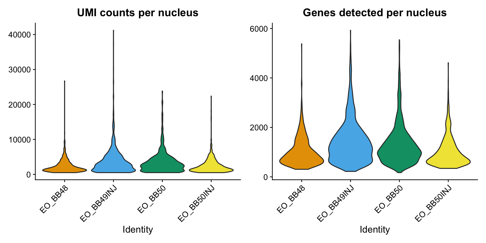
NoteMitochondrial content near zero is expected for this genome
In mouse and human single-cell analyses, the percentage of reads from mitochondrial genes (percent.mt) is a standard QC metric — high values flag damaged or lysed cells. Running PercentageFeatureSet(merged_seurat, pattern = "^mt-") in Brienomyrus brachyistius returns approximately zero for every cell. This is expected and correct for this genome: mitochondrial genes in B. brachyistius are not named with the ^mt- prefix used in mouse and human reference builds. Before using percent.mt as a filter, you would need to identify the correct mitochondrial gene names from features.tsv.gz and recalculate accordingly.
depth_summary <- merged_seurat@meta.data |>
group_by(orig.ident, treatment, sample) |>
summarise(
median_UMI = median(nCount_RNA),
median_gene = median(nFeature_RNA),
.groups = "drop"
)
p_umi <- ggplot(
merged_seurat@meta.data,
aes(x = treatment, y = nCount_RNA, fill = treatment)
) +
geom_violin(alpha = 0.4, scale = "width") +
geom_point(
data = depth_summary,
aes(x = treatment, y = median_UMI, color = sample),
size = 3,
position = position_dodge(width = 0)
) +
scale_fill_manual(values = c("11kt" = "#D55E00", "vehicle" = "#0072B2")) +
scale_color_manual(values = c(
BB48 = "#E69F00", BB49INJ = "#56B4E9",
BB50 = "#009E73", BB50INJ = "#F0E442"
)) +
theme_bw() +
labs(title = "UMI depth by treatment", y = "nCount_RNA", x = "Treatment") +
theme(legend.position = "none")
p_gene <- ggplot(
merged_seurat@meta.data,
aes(x = treatment, y = nFeature_RNA, fill = treatment)
) +
geom_violin(alpha = 0.4, scale = "width") +
geom_point(
data = depth_summary,
aes(x = treatment, y = median_gene, color = sample),
size = 3,
position = position_dodge(width = 0)
) +
scale_fill_manual(values = c("11kt" = "#D55E00", "vehicle" = "#0072B2")) +
scale_color_manual(values = c(
BB48 = "#E69F00", BB49INJ = "#56B4E9",
BB50 = "#009E73", BB50INJ = "#F0E442"
)) +
theme_bw() +
labs(title = "Gene detection by treatment", y = "nFeature_RNA", x = "Treatment") +
theme(legend.position = "right")
p_umi | p_gene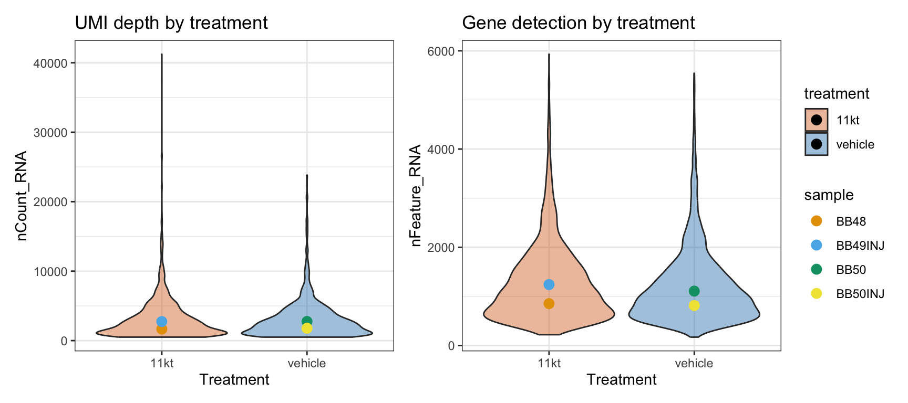
Normalize, reduce, and cluster
We repeat the normalization and PCA workflow from the previous episode, applied now to the EO dataset. The concepts — SCTransform, principal components, elbow plots — were introduced there; here we move quickly to the steps that are new to this episode. Throughout, we use 20 PCs.
merged_seurat <- SCTransform(merged_seurat, verbose = FALSE)merged_seurat <- RunPCA(merged_seurat, verbose = FALSE, assay = "SCT")ElbowPlot(merged_seurat, ndims = 30)
# Store the un-integrated UMAP so we can show it alongside the Harmony UMAP later
merged_seurat <- RunUMAP(
merged_seurat,
dims = 1:20,
reduction = "pca",
reduction.name = "umap.pca",
verbose = FALSE
)Harmony integration
Each of the four EO samples was captured in its own GEM well, creating the potential for GEM-well batch effects: small technical differences in ambient RNA, nucleus capture efficiency, and lysis conditions between wells. Harmony corrects for this by iteratively adjusting the PCA embedding so that cells from different samples are aligned by cell type rather than by which GEM well they came from.
Importantly, Harmony corrects for GEM-well identity — not for treatment. Because 11-KT and vehicle fish span both GEM wells, Harmony cannot and does not remove the biological treatment signal. What it removes is the technical component of inter-well differences.
NoteDon’t over-integrate: Harmony is a sanity check, not a cure
For this dataset, the 4-plex OCM experiment used the same reagent kit, sequencing run, and Cell Ranger pipeline across all four wells. Technical batch is expected to be small. If the PCA UMAP and the Harmony UMAP look nearly identical, that is a good result: it means technical batch was minimal and Harmony provided confirmation rather than correction.
The critical constraint: integrated/corrected values are for clustering and visualization only. All differential expression analysis uses the original raw RNA counts (see §7). Passing Harmony embeddings or SCT residuals to DESeq2 would violate the negative binomial count model and produce incorrect results.
# Note: Seurat v5 integration methods that work on count data (CCA, RPCA, scVI)
# require splitting the RNA assay by sample first:
# merged_seurat[["RNA"]] <- split(merged_seurat[["RNA"]], f = merged_seurat$orig.ident)
#
# Harmony is different — it corrects PCA embeddings, not count data, so we call
# RunHarmony() directly on the already-computed PCA. No layer splitting needed.
cat("Skipping layer split: RunHarmony works on PCA embeddings directly.\n")Skipping layer split: RunHarmony works on PCA embeddings directly.cat("orig.ident levels:", levels(factor(merged_seurat$orig.ident)), "\n")orig.ident levels: EO_BB48 EO_BB49INJ EO_BB50 EO_BB50INJ # RunHarmony corrects the PCA embedding for GEM-well batch effects.
# group.by.vars tells Harmony which metadata column defines the batches.
# reduction.save stores the result in a new "harmony" reduction slot.
merged_seurat <- RunHarmony(
merged_seurat,
group.by.vars = "orig.ident",
reduction = "pca",
reduction.save = "harmony",
verbose = FALSE
)# Layers were never split (we used RunHarmony directly on PCA embeddings).
# The RNA assay is already joined from the merge-and-annotate step.
# PrepSCTFindMarkers and AggregateExpression will find the counts ready to use.
cat("RNA assay layers:", Layers(merged_seurat, assay = "RNA"), "\n")RNA assay layers: counts # Cluster on the harmony reduction (not PCA) so clusters reflect batch-corrected space
merged_seurat <- FindNeighbors(merged_seurat,
dims = 1:20,
reduction = "harmony",
verbose = FALSE
)
merged_seurat <- FindClusters(merged_seurat,
resolution = 0.8,
verbose = FALSE
)
# UMAP on the harmony reduction — stored under a named reduction for comparison
merged_seurat <- RunUMAP(
merged_seurat,
dims = 1:20,
reduction = "harmony",
reduction.name = "umap.harmony",
verbose = FALSE
)p1 <- DimPlot(merged_seurat,
reduction = "umap.pca",
group.by = "orig.ident",
alpha = 0.4
) + ggtitle("PCA — by sample") + theme(legend.position = "right")
p2 <- DimPlot(merged_seurat,
reduction = "umap.pca",
group.by = "treatment",
alpha = 0.4,
cols = c("11kt" = "#D55E00", "vehicle" = "#0072B2")
) + ggtitle("PCA — by treatment")
p3 <- DimPlot(merged_seurat,
reduction = "umap.harmony",
group.by = "orig.ident",
alpha = 0.4
) + ggtitle("Harmony — by sample") + theme(legend.position = "right")
p4 <- DimPlot(merged_seurat,
reduction = "umap.harmony",
group.by = "treatment",
alpha = 0.4,
cols = c("11kt" = "#D55E00", "vehicle" = "#0072B2")
) + ggtitle("Harmony — by treatment")
(p1 | p2) / (p3 | p4)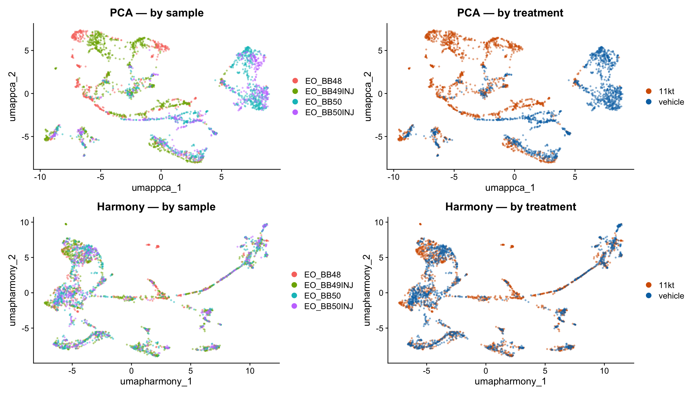
NoteWhat to look for in the integration comparison
“By sample” panels (left column): Look for sample-specific islands — compact regions occupied by cells from only one or two samples. These indicate GEM-well batch structure. After Harmony (bottom-left), those islands should dissolve: cells from all four samples intermix within each cluster.
“By treatment” panels (right column): 11-KT and vehicle cells should partially segregate if hormone treatment changes gene expression — that is the biology you want to detect. Harmony corrects for GEM-well, not for treatment, so treatment-level separation in the UMAP is expected and desirable.
If the two rows of the plot look nearly identical, that confirms the OCM captures had minimal technical batch. Harmony provides assurance, not necessarily a dramatic visual change.
ImportantBefore and after: how much did Harmony change the clusters?
Run the following code to build a contingency table of sample membership by cluster.
# Build the table
sample_cluster_table <- table(
merged_seurat$orig.ident,
merged_seurat$seurat_clusters
)
print(sample_cluster_table)Are there any clusters where one sample contributes more than 80% of the cells? If so, which clusters, and does the Harmony UMAP still show those clusters as isolated from the rest of the data?
Compare the cluster UMAP colored by
seurat_clustersfor both reductions:DimPlot(merged_seurat, reduction = "umap.pca", group.by = "seurat_clusters", label = TRUE) + ggtitle("PCA clusters") DimPlot(merged_seurat, reduction = "umap.harmony", group.by = "seurat_clusters", label = TRUE) + ggtitle("Harmony clusters")Did Harmony split or merge any clusters relative to the PCA-based clustering?
TipSolution
A balanced table has similar cell counts across all four samples in every column. A dominated table has one sample contributing 80%+ of cells to a given cluster — a warning sign that the cluster may reflect a sample-specific artifact rather than a real cell type.
For this low-complexity EO dataset, most clusters are expected to be reasonably balanced because the dominant cell type (electrocytes) is present in all four fish. A cluster dominated by a single sample could indicate: - A rare cell type that only happened to be captured in one fish - An ambient RNA or doublet population - A real biological state that is enriched in one treatment group (not an artifact)
Harmony typically merges some previously split sample-specific clusters and can occasionally split one cluster into sample-mixed sub-clusters. Whether those splits reflect biology or correction artifacts requires comparing against marker genes.
Cell-type annotation
Rather than running a generic GO enrichment test — which performs poorly when one cell type dominates a tissue and per-nucleus depth is shallow — we annotate clusters using canonical marker genes validated in published work on the mormyrid electric organ.
Two genes in particular are confirmed electrocyte-specific across all published datasets and methods:
- scn4aa (
LOC125742960) — Nav1.4a, the principal electrogenic Na⁺ channel. Recruited convergently into electric organs across six independent fish lineages (Gallant et al. 2014 Science 344:1522; Thompson et al. 2018 Curr Biol). - kcna7a (
LOC125743019) — Kv1.7a, the key delayed-rectifier K⁺ channel that sets EOD repolarisation kinetics (Losilla & Gallant 2025 JEB; Zakon et al. 2008 GBE).
Electrocytes are the dominant EO cell type and are myogenic in origin (derived from muscle), so muscle progenitor clusters (expressing pax7b, myomesin) appear nearby on the UMAP. Schwann cells, vascular endothelial cells, and a small immune population round out the expected EO atlas.
# PrepSCTFindMarkers re-normalizes counts across samples before FindAllMarkers
merged_seurat <- PrepSCTFindMarkers(merged_seurat, verbose = FALSE)all_markers_eo <- FindAllMarkers(
merged_seurat,
only.pos = TRUE,
verbose = FALSE
)
all_markers_eo <- all_markers_eo |>
arrange(cluster, desc(avg_log2FC))
head(all_markers_eo, 20) p_val avg_log2FC pct.1 pct.2 p_val_adj cluster
LOC125741747 7.777872e-105 3.087333 0.437 0.067 1.548730e-100 0
LOC125721977 1.529742e-08 2.973992 0.029 0.004 3.046021e-04 0
myog 2.299161e-04 2.917408 0.010 0.001 1.000000e+00 0
tbx22 1.265876e-132 2.875450 0.885 0.399 2.520612e-128 0
LOC125719994 1.774922e-08 2.817873 0.032 0.004 3.534225e-04 0
slc6a17 8.401357e-32 2.778927 0.144 0.022 1.672878e-27 0
ankrd13b 5.849481e-09 2.776053 0.037 0.006 1.164749e-04 0
LOC125704986 5.034884e-33 2.754178 0.163 0.028 1.002546e-28 0
LOC125707038 7.776858e-12 2.721011 0.051 0.008 1.548528e-07 0
LOC125751972 3.391235e-82 2.707783 0.385 0.066 6.752628e-78 0
myom2a 2.525081e-60 2.682358 0.285 0.047 5.027941e-56 0
LOC125724935 2.908150e-67 2.661823 0.346 0.065 5.790708e-63 0
LOC125709307 3.360915e-20 2.647011 0.110 0.021 6.692253e-16 0
LOC125710193 3.355174e-59 2.637301 0.268 0.042 6.680822e-55 0
LOC125728302 3.362850e-17 2.636122 0.080 0.013 6.696106e-13 0
rin1a 4.061909e-44 2.635009 0.234 0.044 8.088074e-40 0
LOC125708896 1.429687e-183 2.600322 0.944 0.315 2.846794e-179 0
LOC125712043 1.914252e-46 2.595480 0.224 0.038 3.811658e-42 0
fam83e 1.785274e-11 2.595480 0.054 0.009 3.554838e-07 0
LOC125747875 4.121857e-08 2.595480 0.037 0.006 8.207441e-04 0
gene
LOC125741747 LOC125741747
LOC125721977 LOC125721977
myog myog
tbx22 tbx22
LOC125719994 LOC125719994
slc6a17 slc6a17
ankrd13b ankrd13b
LOC125704986 LOC125704986
LOC125707038 LOC125707038
LOC125751972 LOC125751972
myom2a myom2a
LOC125724935 LOC125724935
LOC125709307 LOC125709307
LOC125710193 LOC125710193
LOC125728302 LOC125728302
rin1a rin1a
LOC125708896 LOC125708896
LOC125712043 LOC125712043
fam83e fam83e
LOC125747875 LOC125747875# Parse the B. brachyistius RefSeq GTF for human-readable gene product names
gtf_raw <- read_tsv(
"data/ssrnaseq_data/genes.gtf.gz",
comment = "#",
col_names = FALSE,
col_types = "ccciicccc",
show_col_types = FALSE
)
gene_desc <- gtf_raw |>
filter(str_detect(X9, 'product "')) |>
mutate(
gene_id = str_extract(X9, 'gene_id "([^"]+)"', group = 1),
gene_name = str_extract(X9, 'gene "([^"]+)"', group = 1),
product = str_extract(X9, 'product "([^"]+)"', group = 1)
) |>
dplyr::select(gene_id, gene_name, product) |>
distinct(gene_id, .keep_all = TRUE)
# Build a combined lookup indexed by EITHER gene_id (LOC ID) OR gene_name (symbol).
# Read10X uses gene symbols for named genes as rownames; unnamed genes use LOC IDs.
# This two-key lookup handles the mixed naming convention in the Seurat object.
gene_lookup <- bind_rows(
gene_desc |> transmute(key = gene_id, gene_name, product),
gene_desc |>
filter(!is.na(gene_name), gene_name != gene_id) |>
transmute(key = gene_name, gene_name, product)
) |>
distinct(key, .keep_all = TRUE)
cat("Gene descriptions loaded:", nrow(gene_desc), "genes\n")Gene descriptions loaded: 30521 genescat("Lookup entries (by LOC ID + gene symbol):", nrow(gene_lookup), "\n")Lookup entries (by LOC ID + gene symbol): 30521 annotated_markers_eo <- all_markers_eo |>
left_join(gene_lookup |> dplyr::select(key, gene_name, product),
by = c("gene" = "key")
)# Curated marker gene lists for EO cell types.
# Gene names must match the Seurat rownames: Read10X uses gene SYMBOLS for named
# genes (column 2 of features.tsv) and LOC IDs for unnamed genes.
# scn4aa and kcna7a lack curated symbols in this genome build → appear as LOC IDs.
#
# Sources:
# Gallant et al. 2014 Science 344:1522 — convergent Nav1.4 recruitment
# Thompson et al. 2018 Curr Biol — cis-regulatory evolution of scn4aa
# Traeger & Bhatt 2019 BMC Evol Biol — kcna family upregulation in electrocytes
# Losilla & Gallant 2025 JEB — mormyrid EO hormone-response gene expression
# Zakon et al. 2008 GBE — kcna channels as electrocyte signature
# Jessell 2000 Nat Rev Neurosci — mnx1/isl1 as definitive motor neuron TFs
# Bhatt et al. 2007 Annu Rev Neurosci — spinal motor circuit development (isl1/2, chat)
# Ericson et al. 1992 Science — Islet-1 marks all postmitotic motor neurons
marker_genes <- list(
Electrocyte = c(
# Sodium channels (Nav1.4 paralogs) — both present in electrocytes
"LOC125742960", # scn4aa — Nav1.4a; no curated symbol in this genome build
"scn4ab", # Nav1.4b
# Potassium channels — repolarisation
"LOC125743019", # kcna7a — Kv1.7a; no curated symbol in this genome build
"kcna7", # Kv1.7
"kcnq1.2", # Kv7.1
"kcnq5a", # Kv7.5
"kcnn2", # SK2 Ca2+-activated K
# Ion transport / electrocyte identity
"cnga3a", # Cyclic nucleotide-gated channel
"atp1b2b", # Na/K-ATPase β2
# Cell-surface and structural identity
"rrad", # Ras-related; high in electrocytes across species
"igsf9ba", # Ig superfamily — electrocyte cell-surface marker
"robo2", # Axon guidance receptor; marks the innervated stalk region
"tenm1" # Teneurin-1; electrocyte identity
),
Muscle = c(
"pax7b", # Canonical muscle satellite cell transcription factor
"pitx3", # Muscle/lens TF
"myom2a", "myom2b", # Myomesin heavy chain (sarcomeric)
"hey2", # Notch target; satellite cell quiescence
"ezh2", # Epigenetic regulator; cycling myoblasts
"megf10", # Phagocytic receptor on satellite cells
"mcama", # CD146; myoblast marker
"fgfr4", # FGF receptor; myoblast differentiation
"tbx22" # T-box transcription factor; myogenic lineage
),
Schwann = c(
"col28a1a", # Collagen XXVIII — peripheral nerve ECM
"smoc1", # SPARC-related ECM; Schwann cells
"prss12", # Neurotrypsin — peripheral nerve marker
"antxr1b", # TEM8 — expressed in peripheral glia
"numb", # Notch pathway; Schwann cell fate
"olfml2ba", # Olfactomedin-like; Schwann cells
"col6a3", # Collagen VI — endomysial ECM
"sema3bl" # Semaphorin 3B; axon-Schwann interaction
),
Endothelial = c(
"cdh5", # VE-cadherin — gold-standard pan-endothelial
"pecam1b", # CD31 — pan-endothelial
"kdr", # VEGFR2/Flk1 — pan-endothelial
"flt1", # VEGFR1 — pan-endothelial
"clec14a", # C-type lectin; capillary endothelial
"pcdh12", # Protocadherin 12; vascular endothelial
"podxl", # Podocalyxin
"adgrl4" # Latrophilin 4 (ELTD1); angiogenic endothelial
),
Motorneuron = c(
# Transcription factors — definitive post-mitotic motor neuron identity
# Note: isl1/isl2 lack curated symbols in BBRACH_0.4 → LOC IDs
"mnx1", # Motor neuron and pancreas homeobox 1 (HB9); definitive pan-MN TF
"LOC125712540", # isl-1 — insulin gene enhancer protein Isl-1
"LOC125745880", # isl-1-like — Isl-1 paralog
"LOC125704285", # isl-2a — insulin gene enhancer protein Isl-2a
"LOC125706047", # isl-2a-like — Isl-2a paralog
# Cholinergic identity — electromotor neurons are cholinergic
# Note: in this genome the gene is named 'chata', not 'chat'
"chata", # Choline O-acetyltransferase-a; ACh synthesis in all motor neurons
"slc18a3a", # Vesicular acetylcholine transporter-A; cholinergic vesicles
# Pan-neuronal post-mitotic identity (marks all neurons including motor neurons)
"elavl3", # HuC — ELAV-like RNA-binding protein 3; pan-neuronal, post-mitotic
"rbfox3a", # NeuN — RNA-binding fox-1 homolog 3a; mature neuron nuclear marker
# Neurofilament / cytoskeletal — large-calibre motor and sensory axons
"nefma", # Neurofilament medium chain-a
"nefla", # Neurofilament light chain-a
"neflb", # Neurofilament light chain-b
"LOC125751823", # neurofilament medium polypeptide-like (nefm paralog)
"prph", # Peripherin; intermediate filament of peripheral motor neurons
# Synaptic identity
"sv2a", # Synaptic vesicle glycoprotein 2A; marks presynaptic terminals
"snap25a", # SNAP-25A; SNARE protein at the cholinergic NMJ
"LOC125712969", # synaptotagmin-2-like; Ca2+ sensor at fast synapses / NMJ
# Axonal growth and activity markers
"gap43", # Growth-associated protein 43; high in active/regenerating axons
"nrn1b", # Neuritin-1b; activity-regulated; high in post-mitotic motor neurons
"nrxn1a" # Neurexin-1a; presynaptic organiser; NMJ and CNS synapses
)
)
# Filter to genes actually present in this dataset
marker_genes <- lapply(marker_genes, function(g) g[g %in% rownames(merged_seurat)])
cat("Marker genes present in dataset:\n")Marker genes present in dataset:print(sapply(marker_genes, length))Electrocyte Muscle Schwann Endothelial Motorneuron
13 10 8 8 12 # Stalk sub-type marker: PMCA (plasma membrane Ca2+-ATPase) paralogs.
# Defined here alongside the general markers so that stalk sub-classification
# happens in the same annotation pass as the other cell types (see below).
# Source: Baumann et al. 2025 Cell & Tissue Research —
# pan-PMCA protein enriched specifically on stalklet membrane.
pmca_genes <- c("atp2b1a", "atp2b2", "atp2b3b", "atp2b4")
pmca_genes <- pmca_genes[pmca_genes %in% rownames(merged_seurat)]
cat("\nPMCA paralogs detected in dataset:", paste(pmca_genes, collapse = ", "), "\n")
PMCA paralogs detected in dataset: atp2b1a, atp2b2, atp2b3b, atp2b4 # A compact diagnostic panel: 3–4 most informative markers per cell type,
# plus PMCA stalk markers so the stalk sub-type is visible alongside the others.
dot_genes <- c(
# Electrocyte — sodium channel + electrogenic face + surface identity
"LOC125742960", "scn4ab", "atp1b2b", "rrad",
# Stalk electrocyte — PMCA paralogs (plasma membrane Ca2+-ATPase)
pmca_genes,
# Muscle / satellite cells
"pax7b", "myom2a", "hey2",
# Schwann cells
"col28a1a", "smoc1", "numb",
# Endothelial
"cdh5", "pecam1b", "kdr",
# Motor neurons — TF + cholinergic + pan-neuronal
"mnx1", "LOC125712540", "chata", "elavl3", "rbfox3a"
)
dot_genes <- dot_genes[dot_genes %in% rownames(merged_seurat)]
if (length(dot_genes) > 0) {
DotPlot(merged_seurat,
features = dot_genes,
group.by = "seurat_clusters"
) +
RotatedAxis() +
ggtitle("Canonical cell-type markers across clusters")
} else {
message("No dot-plot marker genes found — check rownames(merged_seurat)")
}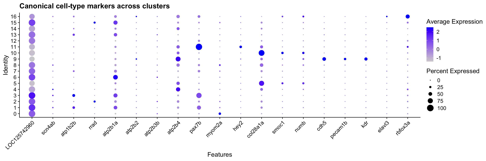
# AddModuleScore computes the average expression of a gene set minus a randomly
# selected background of control genes — positive scores indicate enrichment.
for (ct in names(marker_genes)) {
if (length(marker_genes[[ct]]) < 3) {
message(ct, ": fewer than 3 markers found in dataset — skipping score")
next
}
merged_seurat <- AddModuleScore(
merged_seurat,
features = list(marker_genes[[ct]]),
name = paste0(ct, "_score"),
nbin = 12, # default 24 fails when many genes share the same avg expression
seed = 42
)
# AddModuleScore appends "1" to the column name — rename for clarity
old_col <- paste0(ct, "_score1")
new_col <- paste0(ct, "_score")
merged_seurat@meta.data[[new_col]] <- merged_seurat@meta.data[[old_col]]
merged_seurat@meta.data[[old_col]] <- NULL
}
score_cols <- paste0(names(marker_genes), "_score")
score_cols <- score_cols[score_cols %in% colnames(merged_seurat@meta.data)]
# Compute PMCA (stalk) module score in the same pass as the cell-type scores.
# It is kept out of score_cols (which drives the cell-type assignment step) because
# PMCA is a sub-type discriminator within electrocytes, not a top-level cell-type
# marker — but it IS shown in the FeaturePlot below so learners can see all scores
# computed together before the annotation step.
if (length(pmca_genes) >= 2) {
merged_seurat <- AddModuleScore(
merged_seurat,
features = list(pmca_genes),
name = "PMCA_score",
nbin = 12,
seed = 42
)
merged_seurat$PMCA_score <- merged_seurat$PMCA_score1
merged_seurat$PMCA_score1 <- NULL
}
# Include PMCA_score in the plot alongside the five cell-type scores.
plot_score_cols <- c(
score_cols,
if ("PMCA_score" %in% colnames(merged_seurat@meta.data)) "PMCA_score"
)
FeaturePlot(merged_seurat,
features = plot_score_cols,
reduction = "umap.harmony",
ncol = 2,
order = TRUE
)
# Assign each cluster the cell type with the highest mean module score
cluster_scores <- merged_seurat@meta.data |>
group_by(seurat_clusters) |>
summarise(across(all_of(score_cols), mean, .names = "{.col}"), .groups = "drop")
cluster_labels <- cluster_scores |>
pivot_longer(-seurat_clusters, names_to = "score_col", values_to = "mean_score") |>
mutate(cell_type = str_remove(score_col, "_score")) |>
group_by(seurat_clusters) |>
slice_max(mean_score, n = 1, with_ties = FALSE) |>
ungroup() |>
dplyr::select(seurat_clusters, cell_type, mean_score) |>
arrange(as.integer(as.character(seurat_clusters)))
label_vec <- setNames(
cluster_labels$cell_type,
as.character(cluster_labels$seurat_clusters)
)
merged_seurat$cell_type_go <- unname(label_vec[as.character(merged_seurat$seurat_clusters)])
# Sub-classify clusters into Stalk_Electrocyte vs. everything else using a
# PMCA × Electrocyte joint score — done in the same annotation pass so that
# cell_type_detail is the definitive per-nucleus label from the start.
#
# Searching only within clusters already labelled "Electrocyte" would miss the
# stalk if it was initially mis-assigned (e.g. as Schwann or Muscle). Instead we
# search ALL clusters and rank by PMCA_score × Electrocyte_score. The Electrocyte
# score is zero-floored (pmax(..., 0)) so that clusters with negative electrocyte
# module scores (i.e. clearly non-electrocyte) cannot outscore genuine electrocytes,
# while still allowing any cluster to be considered.
merged_seurat$cell_type_detail <- merged_seurat$cell_type_go
if (length(pmca_genes) >= 2 && "PMCA_score" %in% colnames(merged_seurat@meta.data)) {
# Stalk search: all clusters, ranked by PMCA × electrocyte co-expression
stalk_scores <- merged_seurat@meta.data |>
group_by(seurat_clusters) |>
summarise(
mean_PMCA = mean(PMCA_score),
mean_Elec = mean(Electrocyte_score),
n_cells = n(),
initial_label = names(sort(table(cell_type_go), decreasing = TRUE))[1],
.groups = "drop"
) |>
mutate(stalk_score = mean_PMCA * pmax(mean_Elec, 0)) |>
arrange(desc(stalk_score))
cat("Top clusters by PMCA × electrocyte co-expression score:\n")
print(head(stalk_scores, 10))
stalk_cluster <- as.character(stalk_scores$seurat_clusters[1])
cat(
"\nStalk candidate: cluster", stalk_cluster,
"(initial label:", stalk_scores$initial_label[1],
"| PMCA =", round(stalk_scores$mean_PMCA[1], 3),
"| Electrocyte =", round(stalk_scores$mean_Elec[1], 3), ")\n"
)
# pmca_by_cluster: electrocyte-labelled clusters only, kept for elec-face-setup
# downstream which needs to identify non-stalk face groups among genuine electrocytes.
pmca_by_cluster <- merged_seurat@meta.data |>
filter(cell_type_go == "Electrocyte") |>
group_by(seurat_clusters) |>
summarise(mean_PMCA = mean(PMCA_score), n_cells = n(), .groups = "drop") |>
arrange(desc(mean_PMCA))
# Re-label the stalk cluster regardless of its initial cell_type_go assignment
stalk_idx <- rownames(merged_seurat@meta.data)[
as.character(merged_seurat$seurat_clusters) == stalk_cluster
]
merged_seurat$cell_type_detail[stalk_idx] <- "Stalk_Electrocyte"
}Top clusters by PMCA × electrocyte co-expression score:
# A tibble: 10 × 6
seurat_clusters mean_PMCA mean_Elec n_cells initial_label stalk_score
<fct> <dbl> <dbl> <int> <chr> <dbl>
1 6 0.0717 0.113 167 Motorneuron 0.00810
2 15 0.0328 0.155 45 Electrocyte 0.00509
3 4 0.115 0.0332 218 Schwann 0.00382
4 16 0.0568 0.0610 34 Motorneuron 0.00346
5 14 0.0598 0.0356 46 Motorneuron 0.00213
6 13 0.0176 0.0882 62 Motorneuron 0.00155
7 5 0.0519 0.0137 194 Schwann 0.000713
8 10 0.0218 0.0116 132 Schwann 0.000252
9 11 0.0434 0.00435 117 Muscle 0.000189
10 9 0.176 -0.0221 146 Endothelial 0
Stalk candidate: cluster 6 (initial label: Motorneuron | PMCA = 0.072 | Electrocyte = 0.113 )DimPlot(merged_seurat,
reduction = "umap.harmony",
group.by = "cell_type_detail",
label = TRUE,
repel = TRUE
) +
ggtitle("EO cell types (marker-based annotation, Harmony UMAP)") +
NoLegend()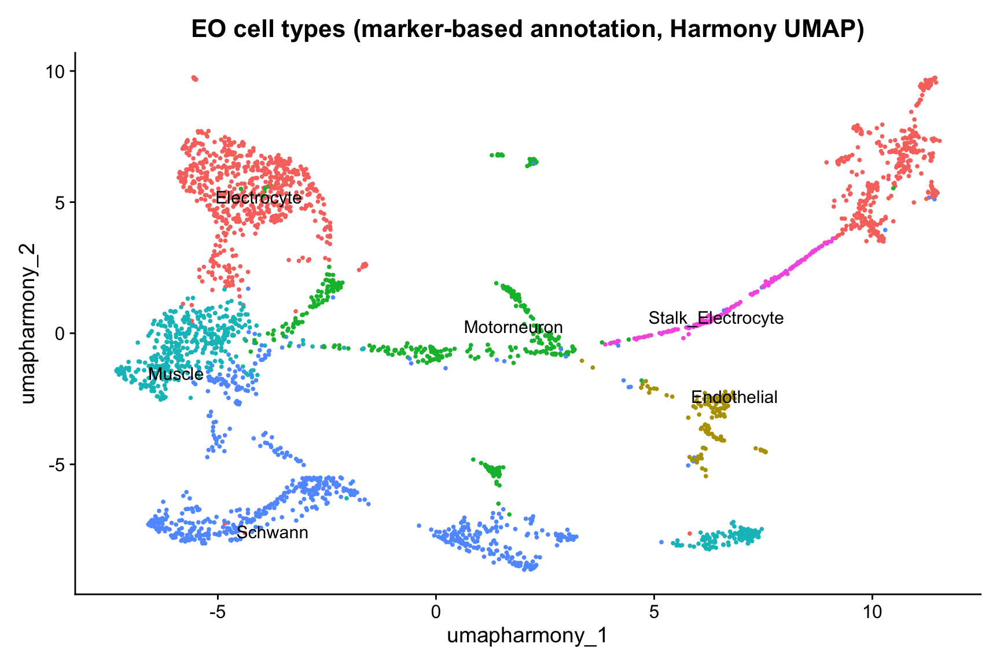
# Side-by-side: raw numbered clusters (left) vs. annotated cell types (right).
# This makes the cluster → tissue grouping legible — learners can trace exactly
# which cluster numbers were merged into each label.
p_clusters <- DimPlot(merged_seurat,
reduction = "umap.harmony",
group.by = "seurat_clusters",
label = TRUE,
repel = TRUE
) +
ggtitle("Seurat clusters (numbered)") +
NoLegend()
p_types <- DimPlot(merged_seurat,
reduction = "umap.harmony",
group.by = "cell_type_detail",
label = TRUE,
repel = TRUE
) +
ggtitle("Annotated cell types") +
NoLegend()
p_clusters | p_types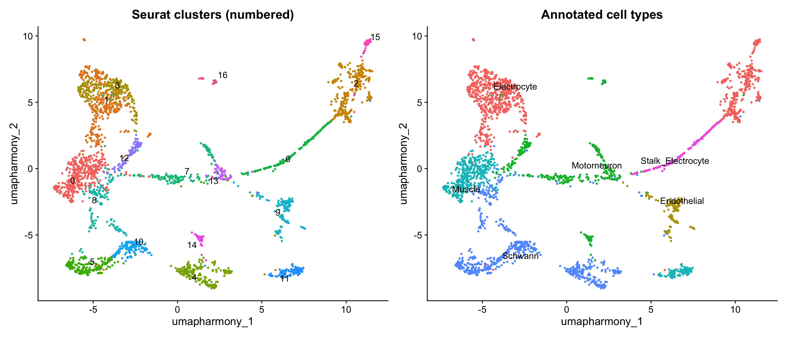
# Cluster → cell-type assignment table.
# n_cells = number of nuclei in this cluster across all samples.
n_per_cluster <- merged_seurat@meta.data |>
group_by(seurat_clusters) |>
summarise(n_cells = n(), .groups = "drop")
# Pull the final (stalk-refined) label for each cluster
detail_per_cluster <- merged_seurat@meta.data |>
group_by(seurat_clusters) |>
summarise(
cell_type = names(sort(table(cell_type_detail), decreasing = TRUE))[1],
.groups = "drop"
)
cluster_labels |>
dplyr::rename(top_marker_score = mean_score) |>
dplyr::select(-cell_type) |> # drop pre-stalk label; refined label comes from detail_per_cluster
left_join(detail_per_cluster, by = "seurat_clusters") |>
left_join(n_per_cluster, by = "seurat_clusters") |>
dplyr::select(seurat_clusters, cell_type, top_marker_score, n_cells) |>
arrange(as.integer(as.character(seurat_clusters))) |>
knitr::kable(
digits = 3,
col.names = c("Cluster", "Cell type", "Best module score", "Nuclei"),
caption = "Cluster → cell-type assignments. 'Best module score' is the mean score of the winning cell-type gene set. Electrocyte clusters are further refined into Stalk_Electrocyte using PMCA module scores."
)| Cluster | Cell type | Best module score | Nuclei |
|---|---|---|---|
| 0 | Muscle | 0.178 | 410 |
| 1 | Electrocyte | 0.152 | 377 |
| 2 | Electrocyte | 0.278 | 298 |
| 3 | Electrocyte | 0.171 | 259 |
| 4 | Schwann | 0.225 | 218 |
| 5 | Schwann | 0.445 | 194 |
| 6 | Stalk_Electrocyte | 0.115 | 167 |
| 7 | Motorneuron | 0.145 | 153 |
| 8 | Schwann | 0.137 | 148 |
| 9 | Endothelial | 0.270 | 146 |
| 10 | Schwann | 0.728 | 132 |
| 11 | Muscle | 0.414 | 117 |
| 12 | Motorneuron | 0.121 | 82 |
| 13 | Motorneuron | 0.153 | 62 |
| 14 | Motorneuron | 0.093 | 46 |
| 15 | Electrocyte | 0.155 | 45 |
| 16 | Motorneuron | 0.176 | 34 |
annotated_markers_eo |>
group_by(cluster) |>
slice_max(avg_log2FC, n = 3) |>
ungroup() |>
dplyr::select(cluster, gene, gene_name, product, avg_log2FC, p_val_adj, pct.1, pct.2) |>
knitr::kable(
digits = 3,
caption = "Top 3 marker genes per cluster (gene = Seurat rowname; gene_name = curated symbol where available)"
)| cluster | gene | gene_name | product | avg_log2FC | p_val_adj | pct.1 | pct.2 |
|---|---|---|---|---|---|---|---|
| 0 | LOC125741747 | LOC125741747 | uncharacterized LOC125741747, transcript variant X2 | 3.087 | 0.000 | 0.437 | 0.067 |
| 0 | LOC125721977 | LOC125721977 | uncharacterized LOC125721977, transcript variant X2 | 2.974 | 0.000 | 0.029 | 0.004 |
| 0 | myog | myog | myogenin | 2.917 | 1.000 | 0.010 | 0.001 |
| 1 | napepld | napepld | N-acyl phosphatidylethanolamine phospholipase D, transcript variant X3 | 2.395 | 0.004 | 0.037 | 0.007 |
| 1 | LOC125723541 | LOC125723541 | uncharacterized LOC125723541, transcript variant X1 | 2.359 | 0.000 | 0.143 | 0.027 |
| 1 | ykt6 | ykt6 | YKT6 v-SNARE homolog (S. cerevisiae), transcript variant X2 | 2.357 | 0.945 | 0.024 | 0.005 |
| 2 | LOC125746078 | LOC125746078 | uncharacterized LOC125746078 | 6.927 | 0.000 | 0.168 | 0.002 |
| 2 | LOC125742488 | LOC125742488 | uncharacterized LOC125742488 | 6.820 | 0.000 | 0.030 | 0.000 |
| 2 | LOC125738950 | LOC125738950 | potassium voltage-gated channel subfamily C member 2-like, transcript variant X2 | 6.151 | 0.000 | 0.245 | 0.008 |
| 3 | capgb | capgb | capping protein (actin filament), gelsolin-like b, transcript variant X3 | 5.343 | 0.001 | 0.012 | 0.000 |
| 3 | LOC125725482 | LOC125725482 | uncharacterized LOC125725482 | 5.343 | 0.001 | 0.012 | 0.000 |
| 3 | LOC125746231 | LOC125746231 | serine/threonine-protein phosphatase with EF-hands 2-like, transcript variant X2 | 4.928 | 0.000 | 0.019 | 0.000 |
| 4 | LOC125748152 | LOC125748152 | delta-type opioid receptor-like | 5.936 | 0.000 | 0.014 | 0.000 |
| 4 | erbb3a | erbb3a | erb-b2 receptor tyrosine kinase 3a, transcript variant X1 | 5.936 | 0.000 | 0.014 | 0.000 |
| 4 | LOC125740478 | LOC125740478 | ATP-sensitive inward rectifier potassium channel 10-like, transcript variant X1 | 5.614 | 0.000 | 0.014 | 0.000 |
| 4 | LOC125746755 | LOC125746755 | zinc finger matrin-type protein 4-like, transcript variant X3 | 5.614 | 0.000 | 0.014 | 0.000 |
| 4 | hapln2 | hapln2 | hyaluronan and proteoglycan link protein 2 | 5.614 | 0.000 | 0.014 | 0.000 |
| 4 | LOC125708476 | LOC125708476 | cartilage intermediate layer protein 1-like, transcript variant X2 | 5.614 | 0.000 | 0.014 | 0.000 |
| 5 | LOC125738877 | LOC125738877 | leptin-B-like | 5.381 | 0.003 | 0.010 | 0.000 |
| 5 | LOC125744864 | LOC125744864 | tubulin alpha-1A chain-like | 5.381 | 0.003 | 0.010 | 0.000 |
| 5 | LOC125751762 | LOC125751762 | TNF receptor-associated factor 6-like | 5.381 | 0.003 | 0.010 | 0.000 |
| 5 | LOC125711998 | LOC125711998 | pannexin-1-like | 5.381 | 0.003 | 0.010 | 0.000 |
| 5 | dnajb13 | dnajb13 | DnaJ heat shock protein family (Hsp40) member B13, transcript variant X2 | 5.381 | 0.003 | 0.010 | 0.000 |
| 5 | LOC125718053 | LOC125718053 | target of Myb protein 1-like, transcript variant X2 | 5.381 | 0.003 | 0.010 | 0.000 |
| 5 | LOC125722975 | LOC125722975 | claudin-34-like, transcript variant X2 | 5.381 | 0.003 | 0.010 | 0.000 |
| 6 | LOC125714689 | LOC125714689 | myosin regulatory light chain 2, skeletal muscle isoform-like | 6.348 | 0.000 | 0.024 | 0.000 |
| 6 | mansc1 | mansc1 | MANSC domain containing 1, transcript variant X1 | 6.348 | 0.000 | 0.018 | 0.000 |
| 6 | cygb2 | cygb2 | cytoglobin 2 | 6.026 | 0.000 | 0.156 | 0.002 |
| 6 | ier3ip1 | ier3ip1 | immediate early response 3 interacting protein 1 | 6.026 | 0.000 | 0.018 | 0.000 |
| 6 | drd1a | drd1a | dopamine receptor D1a, transcript variant X6 | 6.026 | 0.000 | 0.018 | 0.000 |
| 7 | pcbd1 | pcbd1 | pterin-4 alpha-carbinolamine dehydratase/dimerization cofactor of hepatocyte nuclear factor 1 alpha | 5.745 | 0.000 | 0.013 | 0.000 |
| 7 | LOC125716986 | LOC125716986 | uncharacterized LOC125716986 | 5.745 | 0.000 | 0.013 | 0.000 |
| 7 | dnah9 | dnah9 | dynein, axonemal, heavy chain 9 | 4.745 | 0.041 | 0.013 | 0.000 |
| 7 | slc39a1 | slc39a1 | solute carrier family 39 member 1 | 4.745 | 0.041 | 0.013 | 0.000 |
| 7 | LOC125713499 | LOC125713499 | chloride intracellular channel protein 2-like | 4.745 | 0.041 | 0.013 | 0.000 |
| 7 | tmem69 | tmem69 | transmembrane protein 69 | 4.745 | 0.041 | 0.013 | 0.000 |
| 8 | LOC125725018 | LOC125725018 | homeobox protein BarH-like 2 | 5.795 | 0.000 | 0.014 | 0.000 |
| 8 | LOC125707366 | LOC125707366 | uncharacterized LOC125707366 | 5.211 | 0.026 | 0.014 | 0.000 |
| 8 | LOC125739863 | LOC125739863 | PDZ domain-containing RING finger protein 4-like, transcript variant X1 | 4.947 | 0.027 | 0.014 | 0.000 |
| 9 | c19h1orf115 | c19h1orf115 | chromosome 19 C1orf115 homolog | 7.231 | 0.000 | 0.041 | 0.000 |
| 9 | LOC125716235 | LOC125716235 | BMP/retinoic acid-inducible neural-specific protein 3-like, transcript variant X2 | 7.039 | 0.000 | 0.041 | 0.000 |
| 9 | podxl | podxl | podocalyxin-like, transcript variant X4 | 6.863 | 0.000 | 0.158 | 0.001 |
| 10 | kcnj12a | kcnj12a | potassium inwardly rectifying channel subfamily J member 12a, transcript variant X2 | 5.969 | 0.000 | 0.015 | 0.000 |
| 10 | slc1a6 | slc1a6 | solute carrier family 1 member 6, transcript variant X4 | 5.969 | 0.000 | 0.015 | 0.000 |
| 10 | tshr | tshr | thyroid stimulating hormone receptor | 5.706 | 0.005 | 0.015 | 0.000 |
| 11 | LOC125705246 | LOC125705246 | protein arginine N-methyltransferase 8-B-like, transcript variant X2 | 6.566 | 0.000 | 0.026 | 0.000 |
| 11 | myf5 | myf5 | myogenic factor 5 | 6.566 | 0.000 | 0.026 | 0.000 |
| 11 | LOC125706076 | LOC125706076 | syntaxin-19-like, transcript variant X2 | 6.566 | 0.000 | 0.026 | 0.000 |
| 12 | LOC125711520 | LOC125711520 | uncharacterized LOC125711520 | 6.682 | 0.000 | 0.061 | 0.000 |
| 12 | LOC125740591 | LOC125740591 | phospholipase D1-like, transcript variant X1 | 6.682 | 0.000 | 0.024 | 0.000 |
| 12 | LOC125749001 | LOC125749001 | uncharacterized LOC125749001 | 6.682 | 0.000 | 0.024 | 0.000 |
| 12 | LOC125704475 | LOC125704475 | tripartite motif-containing protein 2-like, transcript variant X1 | 6.682 | 0.000 | 0.024 | 0.000 |
| 12 | LOC125705883 | LOC125705883 | ras association domain-containing protein 10-like | 6.682 | 0.000 | 0.024 | 0.000 |
| 13 | LOC125744866 | LOC125744866 | tubulin alpha-1C chain | 7.095 | 0.000 | 0.032 | 0.000 |
| 13 | ela3l | ela3l | elastase 3 like | 6.510 | 0.000 | 0.016 | 0.000 |
| 13 | ntpcr | ntpcr | nucleoside-triphosphatase, cancer-related, transcript variant X1 | 6.510 | 0.000 | 0.016 | 0.000 |
| 13 | LOC125742245 | LOC125742245 | solute carrier family 2, facilitated glucose transporter member 11-like, transcript variant X1 | 6.510 | 0.000 | 0.016 | 0.000 |
| 13 | exosc2 | exosc2 | exosome component 2 | 6.510 | 0.000 | 0.016 | 0.000 |
| 13 | mrps21 | mrps21 | mitochondrial ribosomal protein S21 | 6.510 | 0.000 | 0.016 | 0.000 |
| 13 | psenen | psenen | presenilin enhancer, gamma-secretase subunit, transcript variant X2 | 6.510 | 0.000 | 0.016 | 0.000 |
| 13 | LOC125748744 | LOC125748744 | uncharacterized LOC125748744 | 6.510 | 0.000 | 0.016 | 0.000 |
| 13 | nxt2 | nxt2 | nuclear transport factor 2-like export factor 2 | 6.510 | 0.000 | 0.016 | 0.000 |
| 13 | LOC125705869 | LOC125705869 | deoxyuridine 5’-triphosphate nucleotidohydrolase, mitochondrial-like, transcript variant X3 | 6.510 | 0.000 | 0.016 | 0.000 |
| 13 | gstz1 | gstz1 | glutathione S-transferase zeta 1, transcript variant X1 | 6.510 | 0.000 | 0.016 | 0.000 |
| 13 | dohh | dohh | deoxyhypusine hydroxylase/monooxygenase | 6.510 | 0.000 | 0.016 | 0.000 |
| 13 | asb12a | asb12a | ankyrin repeat and SOCS box-containing 12a | 6.510 | 0.000 | 0.016 | 0.000 |
| 13 | cdcp2 | cdcp2 | CUB domain containing protein 2 | 6.510 | 0.000 | 0.016 | 0.000 |
| 13 | cdk2ap2 | cdk2ap2 | cyclin-dependent kinase 2 associated protein 2 | 6.510 | 0.000 | 0.016 | 0.000 |
| 13 | LOC125727760 | LOC125727760 | E3 ubiquitin-protein ligase znrf3-like, transcript variant X2 | 6.510 | 0.000 | 0.016 | 0.000 |
| 14 | dok2 | dok2 | docking protein 2 | 7.949 | 0.000 | 0.065 | 0.000 |
| 14 | LOC125720678 | LOC125720678 | interleukin-8-like | 7.949 | 0.000 | 0.065 | 0.000 |
| 14 | dennd1c | dennd1c | DENN domain containing 1C, transcript variant X3 | 7.534 | 0.000 | 0.043 | 0.000 |
| 14 | zbtb32 | zbtb32 | zinc finger and BTB domain containing 32, transcript variant X1 | 7.534 | 0.000 | 0.043 | 0.000 |
| 14 | LOC125707297 | LOC125707297 | T-cell activation Rho GTPase-activating protein-like | 7.534 | 0.000 | 0.043 | 0.000 |
| 14 | LOC125746463 | LOC125746463 | C-X-C motif chemokine 11-6-like, transcript variant X6 | 7.534 | 0.000 | 0.022 | 0.000 |
| 15 | LOC125711302 | LOC125711302 | collagen alpha-1(IV) chain-like | 9.229 | 0.000 | 0.111 | 0.000 |
| 15 | LOC125713521 | LOC125713521 | uncharacterized LOC125713521, transcript variant X2 | 9.097 | 0.000 | 0.267 | 0.001 |
| 15 | LOC125721709 | LOC125721709 | glycerophosphodiester phosphodiesterase domain-containing protein 5-like, transcript variant X2 | 8.770 | 0.000 | 0.689 | 0.004 |
| 16 | LOC125705310 | LOC125705310 | putative methyltransferase NSUN7, transcript variant X2 | 9.561 | 0.000 | 0.206 | 0.000 |
| 16 | ak8 | ak8 | adenylate kinase 8, transcript variant X3 | 8.713 | 0.000 | 0.118 | 0.000 |
| 16 | LOC125712018 | LOC125712018 | protocadherin Fat 4, transcript variant X10 | 8.713 | 0.000 | 0.118 | 0.000 |
| 16 | flrt1b | flrt1b | fibronectin leucine rich transmembrane protein 1b, transcript variant X2 | 8.713 | 0.000 | 0.088 | 0.000 |
| 16 | ak9 | ak9 | adenylate kinase 9, transcript variant X3 | 8.713 | 0.000 | 0.088 | 0.000 |
| 16 | gpr158a | gpr158a | G protein-coupled receptor 158a, transcript variant X3 | 8.713 | 0.000 | 0.059 | 0.000 |
| 16 | htr2cl1 | htr2cl1 | 5-hydroxytryptamine (serotonin) receptor 2C, G protein-coupled-like 1 | 8.713 | 0.000 | 0.029 | 0.000 |
Electrocyte sub-types: stalk vs. face compartments
Each electrocyte has two functionally distinct membrane regions:
- Stalk system (posterior / innervated face): tubular processes (stalklets) on the posterior face converge into a main stalk that carries the electromotor nerve innervation point. Acetylcholine released here initiates the action potential. PMCA-mediated Ca²⁺ extrusion maintains low Ca²⁺ at this heavily active membrane.
- Anterior face (non-innervated): the opposite disc membrane, which generates a counter-potential. Both faces are excitable and can generate action potentials, but their channel complements likely differ; the published literature does not yet provide a definitive face-by-face ion-channel inventory.
Baumann et al. (2025, Cell & Tissue Research, doi:10.1007/s00441-024-03938-y) used immunofluorescence in Campylomormyrus to show that PMCA (plasma membrane Ca²⁺-ATPase) is enriched specifically on the stalklet membrane — the fine tubular processes on the posterior (innervated) face that converge into the main stalk and innervation point. Na⁺/K⁺-ATPase, by contrast, labels both faces.
Because the Baumann study used a pan-PMCA antibody (clone 5F10), it cannot identify which atp2b paralog is responsible. This is where the single-nucleus data is informative: four PMCA paralogs are present in the B. brachyistius genome — atp2b1a, atp2b2, atp2b3b, and atp2b4 — and whichever one is most stalk-cluster-specific in the expression data is the best candidate for the stalk-enriched isoform.
# pmca_genes was defined in the marker-gene-lists chunk alongside the other markers.
# These feature plots show which paralogs drive the PMCA module score used to
# identify the stalk cluster during annotation.
FeaturePlot(merged_seurat,
features = pmca_genes,
reduction = "umap.harmony",
ncol = 2,
order = TRUE
)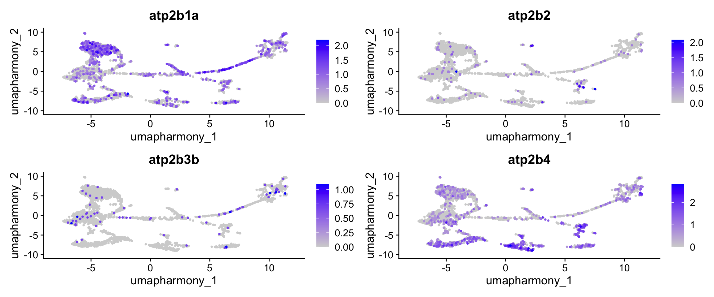
# Compare stalk markers (PMCA + robo2) against general electrocyte markers.
# Note: scn4aa/scn4ab and atp1b2b are general electrocyte markers — the published
# literature does not assign them specifically to the anterior or posterior face.
# Both faces are excitable; face-specific channel assignments are not yet established.
stalk_panel <- c(pmca_genes, "robo2")
general_panel <- c("scn4ab", "atp1b2b", "igsf9ba", "LOC125742960")
stalk_all_panel <- unique(c(stalk_panel, general_panel))
stalk_all_panel <- stalk_all_panel[stalk_all_panel %in% rownames(merged_seurat)]
# Identify cluster numbers assigned as Electrocyte
elec_clusters <- as.character(
cluster_labels$seurat_clusters[cluster_labels$cell_type == "Electrocyte"]
)
if (length(stalk_all_panel) > 0 && length(elec_clusters) > 0) {
n_stalk <- length(stalk_panel[stalk_panel %in% stalk_all_panel])
DotPlot(merged_seurat,
features = stalk_all_panel,
idents = elec_clusters,
group.by = "seurat_clusters"
) +
RotatedAxis() +
geom_vline(
xintercept = n_stalk + 0.5,
linetype = "dashed",
colour = "grey50",
linewidth = 0.8
) +
annotate("text",
x = n_stalk / 2, y = -0.5,
label = "← PMCA / stalk", colour = "grey40", size = 3
) +
annotate("text",
x = n_stalk + 3, y = -0.5,
label = "General electrocyte →", colour = "grey40", size = 3
) +
ggtitle("PMCA stalk markers vs. general electrocyte markers within electrocyte clusters")
}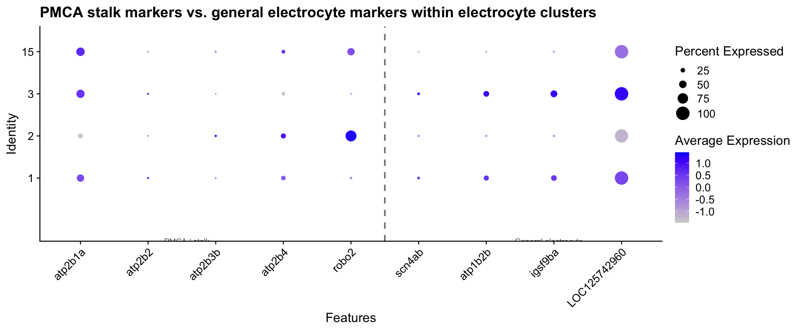
NoteOne cluster vs. many: how to refine the stalk call
AddModuleScore identifies the electrocyte cluster with the highest mean PMCA score as the stalk candidate. In practice, stalk identity may be spread across more than one cluster (the EO has heterogeneous stalk morphology), or PMCA may be moderately expressed in all electrocytes. Two ways to refine:
Compare the score gap. If the top cluster’s mean score is substantially higher than the second-ranked cluster (e.g., >0.1 difference), the call is confident. A small gap suggests the stalk identity is shared across clusters or is not well-resolved at the current clustering resolution.
Increase resolution. Re-run
FindClusterson the electrocyte subset alone at a higher resolution (e.g.,resolution = 1.5). Sub-clustering a single cell type often reveals finer compartmental structure invisible in the whole-dataset clustering.
ImportantWhat do the electrocyte sub-clusters represent?
The EO UMAP likely contains several clusters all assigned “Electrocyte” by the marker-score approach. Using PMCA expression and the stalk-vs-face DotPlot from the chunks above, investigate whether you can sub-divide them anatomically.
- Look at the
stalk-dotplotoutput. Which electrocyte cluster shows the highest expression of PMCA paralogs (atp2b1a,atp2b2,atp2b3b,atp2b4) combined withrobo2? Does any cluster show both PMCA-high andscn4ab-high expression (suggesting it may be the stalk+posterior-face junction)? - Look at the
cluster-tissue-mapside-by-side UMAP. Find the cluster number that was assignedStalk_Electrocyte. Where does it sit on the UMAP — is it at the edge of the electrocyte territory or centrally mixed? - Which PMCA paralog (if any) shows the most restricted, stalk-specific pattern in the
stalk-featureplot? That would be the best single-gene stalk marker for future experiments.
TipSolution
There is no single correct answer — it depends on clustering resolution and the specific dataset. General expectations:
- Stalk electrocytes express
robo2andtenm1(axon guidance / electromotor nerve contact) together with one or more PMCA paralogs. Baumann et al. 2025 shows pan-PMCA protein enrichment on the stalklet membrane using a pan-antibody — the specific atp2b isoform responsible is not yet known at the protein level. Thestalk-featureplotandannotate-stalkchunks are the first transcript-level data that can identify which paralog is stalk-enriched in B. brachyistius. - The two non-stalk electrocyte populations visible on the UMAP likely correspond to the anterior and posterior faces, but the published literature does not yet provide a definitive face-by-face channel inventory. Both faces are excitable; assigning specific channels to one face or the other rigorously requires spatial transcriptomics or single-cell patch-clamp combined with morphological identification. PMCA enrichment on the stalklet (posterior/innervated face) remains the most reliable published molecular landmark.
- K-channel–enriched clusters (
kcnq5a,kcnn2,kcna7) are plausible candidates for a face with a prominent repolarising component — but this is an open hypothesis, not established biology. - If top markers in a cluster are all “uncharacterized protein,” BLAST the protein sequences against zebrafish or other teleost proteomes for a first-pass guess.
Characterising electrocyte face populations
In the mormyrid electric organ, each electrocyte is a large disc-shaped cell with two electrochemically distinct membranes: the posterior (innervated) face, which generates the action potential through voltage-gated sodium channels, and the anterior (non-innervated) face, which is largely passive but expresses a complementary set of potassium and calcium channels that shape the discharge waveform. The precise ion channel inventory of each face in B. brachyistius is not yet fully characterised at the transcript level — that is exactly what our snRNA-seq data can begin to address.
Looking at the Harmony UMAP, the non-stalk electrocyte clusters form two visual groupings. The code below identifies these groups dynamically from the UMAP geometry, then runs a systematic marker comparison to ask: what molecular differences separate them, and are those differences coherent enough to support a face-identity interpretation?
The approach proceeds in three steps: (1) assign non-stalk clusters to two candidate face groups using k-means on UMAP centroids; (2) find differentially expressed genes between those groups and scan their functional annotations; (3) compare within-group and between-group DEG counts to judge whether the sub-clustering reflects biology or residual technical variation.
# Dynamically assign non-stalk electrocyte clusters to two face groups
# using k-means clustering on UMAP centroids.
if (exists("stalk_cluster") && exists("pmca_by_cluster")) {
# All electrocyte clusters except the stalk
face_clusters <- pmca_by_cluster |>
filter(as.character(seurat_clusters) != stalk_cluster) |>
pull(seurat_clusters) |>
as.character()
# UMAP coordinates for face-cluster nuclei
umap_mat <- Embeddings(merged_seurat, "umap.harmony")
face_centroids <- merged_seurat@meta.data |>
rownames_to_column("cell") |>
filter(as.character(seurat_clusters) %in% face_clusters) |>
left_join(as.data.frame(umap_mat) |> rownames_to_column("cell"), by = "cell") |>
group_by(seurat_clusters) |>
summarise(
U1 = mean(.data[[colnames(umap_mat)[1]]]),
U2 = mean(.data[[colnames(umap_mat)[2]]]),
.groups = "drop"
)
# K-means (k = 2) to split into two candidate face groups
set.seed(42)
km <- kmeans(face_centroids[, c("U1", "U2")], centers = 2)
face_centroids$face_group <- as.character(km$cluster)
face_A <- face_centroids |>
filter(face_group == "1") |>
pull(seurat_clusters) |>
as.character()
face_B <- face_centroids |>
filter(face_group == "2") |>
pull(seurat_clusters) |>
as.character()
cat("Face group A clusters:", paste(face_A, collapse = ", "), "\n")
cat("Face group B clusters:", paste(face_B, collapse = ", "), "\n")
} else {
message("Stalk annotation did not complete — skipping face characterisation")
}Face group A clusters: 1, 3
Face group B clusters: 2, 15 With two candidate face groups identified, FindMarkers compares their gene expression profiles. We pass group.by = "seurat_clusters" and restrict to electrocyte nuclei only so that non-electrocyte clusters do not dilute the comparison.
if (exists("face_A") && exists("face_B")) {
elec_cells <- rownames(merged_seurat@meta.data)[
merged_seurat$cell_type_go == "Electrocyte"
]
face_markers <- FindMarkers(
merged_seurat,
ident.1 = face_A,
ident.2 = face_B,
group.by = "seurat_clusters",
cells = elec_cells,
verbose = FALSE
) |>
tibble::rownames_to_column("gene") |>
left_join(gene_lookup |> dplyr::select(key, gene_name, product),
by = c("gene" = "key")
) |>
arrange(desc(avg_log2FC))
cat("Top 20 markers enriched in face group A:\n")
print(head(face_markers |> filter(p_val_adj < 0.05), 20))
cat("\nTop 20 markers enriched in face group B:\n")
print(head(face_markers |> filter(p_val_adj < 0.05) |> arrange(avg_log2FC), 20))
}Top 20 markers enriched in face group A:
gene p_val avg_log2FC pct.1 pct.2 p_val_adj gene_name
1 lrrc30a 1.581103e-06 4.663771 0.064 0.000 3.148291e-02 lrrc30a
2 LOC125727757 1.039559e-10 4.466734 0.119 0.003 2.069969e-06 LOC125727757
3 LOC125709350 5.530848e-44 3.782056 0.535 0.090 1.101302e-39 LOC125709350
4 LOC125723541 3.768791e-12 3.767393 0.148 0.009 7.504416e-08 LOC125723541
5 LOC125740822 5.815798e-08 3.632744 0.094 0.006 1.158042e-03 LOC125740822
6 si:dkey-1h6.8 6.352538e-11 3.581670 0.140 0.012 1.264917e-06 si:dkey-1h6.8
7 zgc:56699 1.106972e-18 3.511280 0.283 0.050 2.204203e-14 zgc:56699
8 LOC125751019 2.411370e-09 3.501499 0.116 0.009 4.801520e-05 LOC125751019
9 atp1b2b 1.621511e-23 3.472279 0.324 0.047 3.228753e-19 atp1b2b
10 lingo2 2.779313e-18 3.384189 0.329 0.087 5.534169e-14 lingo2
11 LOC125704125 1.714238e-06 3.382200 0.077 0.006 3.413390e-02 LOC125704125
12 sowahd 1.597102e-08 3.357109 0.107 0.009 3.180150e-04 sowahd
13 LOC125716884 1.153996e-09 3.326413 0.126 0.012 2.297836e-05 LOC125716884
14 LOC125730833 7.294419e-09 3.299006 0.105 0.006 1.452465e-04 LOC125730833
15 LOC125710080 2.474591e-15 3.227179 0.219 0.029 4.927405e-11 LOC125710080
16 eps8a 6.573493e-14 3.128375 0.217 0.038 1.308914e-09 eps8a
17 thbs4b 1.254581e-07 3.127104 0.102 0.012 2.498121e-03 thbs4b
18 LOC125723591 2.131328e-11 3.109182 0.162 0.020 4.243901e-07 LOC125723591
19 src 6.834943e-46 3.105340 0.572 0.108 1.360974e-41 src
20 pde4d 6.318330e-82 3.088222 0.884 0.359 1.258106e-77 pde4d
product
1 leucine rich repeat containing 30a, transcript variant X2
2 heat shock protein beta-1-like, transcript variant X1
3 uncharacterized LOC125709350
4 uncharacterized LOC125723541, transcript variant X1
5 polymeric immunoglobulin receptor-like, transcript variant X7
6 uncharacterized si:dkey-1h6.8, transcript variant X3
7 uncharacterized protein LOC405758 homolog, transcript variant X3
8 protein boule-like, transcript variant X1
9 ATPase Na+/K+ transporting subunit beta 2b
10 leucine rich repeat and Ig domain containing 2, transcript variant X4
11 cyclic nucleotide-gated cation channel beta-3-like
12 sosondowah ankyrin repeat domain family d
13 growth arrest and DNA damage-inducible protein GADD45 alpha-like
14 protein Wnt-7b-like
15 ETS translocation variant 5-like
16 epidermal growth factor receptor pathway substrate 8a, transcript variant X1
17 thrombospondin 4b
18 musculoskeletal embryonic nuclear protein 1-like
19 v-src avian sarcoma (Schmidt-Ruppin A-2) viral oncogene homolog, transcript variant X2
20 phosphodiesterase 4D, cAMP-specific, transcript variant X8
Top 20 markers enriched in face group B:
gene p_val avg_log2FC pct.1 pct.2 p_val_adj
1 LOC125705188 3.074650e-63 -6.939578 0.006 0.402 6.122243e-59
2 LOC125750469 4.591965e-51 -6.913186 0.003 0.327 9.143521e-47
3 LOC125738950 6.973853e-34 -6.890818 0.003 0.224 1.388634e-29
4 LOC125706162 1.826320e-61 -6.860445 0.006 0.394 3.636569e-57
5 arhgap20b 2.695117e-46 -6.845014 0.005 0.303 5.366517e-42
6 LOC125711940 8.522855e-79 -6.401492 0.025 0.525 1.697071e-74
7 LOC125739274 3.482394e-34 -6.398613 0.002 0.222 6.934142e-30
8 LOC125750750 5.936769e-108 -6.379462 0.020 0.656 1.182129e-103
9 slc9a5 1.963063e-60 -6.289989 0.006 0.388 3.908850e-56
10 drd2b 4.182262e-21 -6.274522 0.005 0.149 8.327720e-17
11 ca12 1.012750e-13 -6.248370 0.000 0.085 2.016588e-09
12 LOC125712744 8.498374e-94 -6.229620 0.020 0.589 1.692196e-89
13 rrad 2.218750e-33 -6.188499 0.003 0.222 4.417975e-29
14 LOC125721709 1.200338e-14 -6.176220 0.002 0.096 2.390114e-10
15 msi1b 5.028362e-29 -6.138746 0.002 0.190 1.001247e-24
16 arhgef4 5.681313e-94 -6.123027 0.022 0.592 1.131263e-89
17 atp10b 2.747618e-13 -6.100272 0.000 0.082 5.471058e-09
18 si:dkey-34d22.1 1.876951e-88 -6.052706 0.013 0.548 3.737384e-84
19 LOC125718800 2.138867e-51 -6.047323 0.011 0.350 4.258912e-47
20 robo2 1.887893e-118 -6.023712 0.055 0.749 3.759173e-114
gene_name
1 LOC125705188
2 LOC125750469
3 LOC125738950
4 LOC125706162
5 arhgap20b
6 LOC125711940
7 LOC125739274
8 LOC125750750
9 slc9a5
10 drd2b
11 ca12
12 LOC125712744
13 rrad
14 LOC125721709
15 msi1b
16 arhgef4
17 atp10b
18 si:dkey-34d22.1
19 LOC125718800
20 robo2
product
1 uncharacterized LOC125705188
2 leucine-rich repeat-containing protein 17-like, transcript variant X3
3 potassium voltage-gated channel subfamily C member 2-like, transcript variant X2
4 uncharacterized LOC125706162
5 Rho GTPase activating protein 20b, transcript variant X1
6 Down syndrome cell adhesion molecule-like protein 1 homolog, transcript variant X2
7 twinfilin-1-like
8 serine protease 23-like, transcript variant X2
9 solute carrier family 9 member A5
10 dopamine receptor D2b, transcript variant X1
11 carbonic anhydrase XII, transcript variant X2
12 sodium channel subunit beta-3-like
13 Ras-related associated with diabetes
14 glycerophosphodiester phosphodiesterase domain-containing protein 5-like, transcript variant X2
15 musashi RNA binding protein 1b, transcript variant X1
16 Rho guanine nucleotide exchange factor (GEF) 4
17 ATPase phospholipid transporting 10B, transcript variant X1
18 discoidin, CUB and LCCL domain-containing protein 1
19 uncharacterized LOC125718800, transcript variant X6
20 roundabout, axon guidance receptor, homolog 2 (Drosophila)Rather than looking for pre-selected genes, scanning the product field for broad functional categories reveals whether the face separation is driven by ion channel differences, extracellular matrix composition, signalling state, or something else — before committing to any biological interpretation.
if (exists("face_markers")) {
face_markers |>
filter(p_val_adj < 0.05, abs(avg_log2FC) > 0.5, !is.na(product)) |>
mutate(product = as.character(product)) |>
mutate(category = case_when(
str_detect(product, regex(
"potassium|sodium|calcium|chloride|channel|transporter",
ignore_case = TRUE
)) ~ "Ion channel/transporter",
str_detect(product, regex(
"collagen|fibronectin|laminin|cadherin|integrin",
ignore_case = TRUE
)) ~ "ECM/adhesion",
str_detect(product, regex(
"kinase|phosphatase|GTPase|signaling",
ignore_case = TRUE
)) ~ "Signaling",
str_detect(product, regex(
"actin|myosin|tubulin|spectrin|cytoskeletal",
ignore_case = TRUE
)) ~ "Cytoskeletal",
str_detect(product, regex(
"receptor|ligand",
ignore_case = TRUE
)) ~ "Receptor/ligand",
TRUE ~ "Other/uncharacterized"
)) |>
dplyr::count(category, sort = TRUE) |>
print()
} category n
1 Other/uncharacterized 1271
2 Signaling 178
3 Receptor/ligand 83
4 Cytoskeletal 75
5 Ion channel/transporter 51
6 ECM/adhesion 48A DotPlot of the top hits from each group provides a visual summary confirming that the groupings are clean and that the top genes are not cryptic pan-electrocyte markers.
if (exists("face_markers") && exists("face_A") && exists("face_B")) {
top_face_A <- face_markers |>
filter(p_val_adj < 0.05) |>
slice_max(avg_log2FC, n = 10) |>
pull(gene)
top_face_B <- face_markers |>
filter(p_val_adj < 0.05) |>
slice_min(avg_log2FC, n = 10) |>
pull(gene)
DotPlot(
merged_seurat,
features = unique(c(top_face_A, top_face_B)),
idents = c(face_A, face_B),
group.by = "seurat_clusters"
) + RotatedAxis() +
ggtitle("Top markers distinguishing electrocyte face groups")
}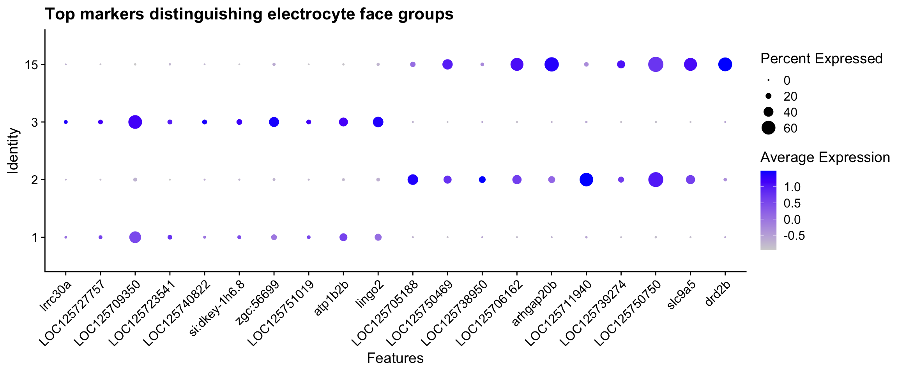
Finally, comparing significant DEG counts between face groups vs. within a single group tests whether the k-means split captures something real. If between-group differences far outnumber within-group differences, the two groups are molecularly coherent. A comparable within-group signal suggests sub-structure or residual batch effects.
if (exists("face_A") && length(face_A) >= 2 &&
exists("face_markers") && exists("elec_cells")) {
within_markers <- FindMarkers(
merged_seurat,
ident.1 = face_A[1],
ident.2 = face_A[2],
group.by = "seurat_clusters",
cells = elec_cells,
verbose = FALSE
) |>
tibble::rownames_to_column("gene") |>
left_join(gene_lookup |> dplyr::select(key, gene_name, product),
by = c("gene" = "key")
)
n_between <- sum(face_markers$p_val_adj < 0.05, na.rm = TRUE)
n_within <- sum(within_markers$p_val_adj < 0.05, na.rm = TRUE)
cat("Significant DEGs between face groups: ", n_between, "\n")
cat("Significant DEGs within face group A: ", n_within, "\n")
cat(
"Ratio (between / within): ",
round(n_between / max(n_within, 1), 1), "\n\n"
)
cat(
"Interpretation:",
if (n_between > 3 * n_within) {
"Clean face separation — many more between-group DEGs than within-group."
} else {
"Possible sub-structure or residual technical effects within face group A."
},
"\n"
)
}Significant DEGs between face groups: 1719
Significant DEGs within face group A: 249
Ratio (between / within): 6.9
Interpretation: Clean face separation — many more between-group DEGs than within-group.
NoteThree reasons electrocyte clusters can split
When non-stalk electrocyte clusters form two UMAP-separated groups, the explanation is usually one of three things:
Biological — anterior vs. posterior face identity. The posterior (innervated) face is dominated by Nav channels (
scn4aa,scn4ab) and is depolarised by the electromotor nerve; the anterior face relies on potassium and calcium channels to repolarise. If the top between-group DEGs include coherent ion channel families, a face-identity split is the most parsimonious explanation.Spatial/anatomical — rostral vs. caudal segments. In some mormyrids the rostral and caudal portions of the electric organ have different channel densities, a form of regional specialisation along the organ’s long axis. Cytoskeletal or ECM differences between groups (rather than ion channels) can be a first hint of this.
Technical — residual sample-of-origin effects. Even after Harmony correction, mild batch effects can split a single cell type into two clouds if cell recovery was uneven across samples. Check the per-cluster sample composition with
table(seurat_clusters, orig.ident)filtered to electrocytes: a strongly biased table suggests a technical split.
Rule of thumb: Many between-group DEGs with coherent ion channel or ECM products → biological. Few DEGs or mostly uncharacterised proteins → likely technical. A within-group DEG count comparable to the between-group count → sub-structure worth exploring with sub-clustering at higher resolution.
Pseudobulk differential expression with DESeq2
We now test whether 11-KT treatment changes gene expression within each cell type. This is the central analytical question of the episode.
Why pseudobulk? The pseudoreplication problem
This dataset contains approximately 2,900 nuclei from four fish — two 11-KT treated (BB48 and BB49INJ) and two vehicle controls (BB50 and BB50INJ). A tempting but incorrect approach would be to test each nucleus as an independent observation: run a Wilcoxon test on the ~1,400 11-KT nuclei vs. the ~1,400 vehicle nuclei.
The problem is that nuclei from the same fish are not independent. They share fish-level variation in diet, microbiome, stress history, circadian state, and countless other factors that have nothing to do with the 11-KT treatment. Treating each nucleus as an independent replicate inflates the degrees of freedom by ~700-fold, deflates p-values accordingly, and makes results from a single unusual fish look like a robust, reproducible treatment effect.
Pseudobulk analysis solves this by aggregating nuclei to the biological replicate level before testing. We sum raw counts per gene across all nuclei of the same cell type within the same sample, producing one count per gene per cell type per fish — four numbers in total. DESeq2 then models these four numbers using the negative binomial distribution with a treatment contrast, restoring honest degrees of freedom.
NoteWhy pseudobulk: the pseudoreplication problem
With n=2 fish per condition, you have 2 biological replicates per group, not ~1,400.
- Running Wilcoxon on individual nuclei treats each of ~1,400 nuclei as independent → inflated df → deflated p-values → false confidence
- Pseudobulk collapses nuclei to the fish level before testing → correct df
- With n=2 per group, DESeq2 will produce wide confidence intervals and (rightly) conservative adjusted p-values. This is correct statistical behavior, not a failure of the method.
- The most valuable output is a ranked gene list for follow-up validation, not a definitive list of “DE genes.”
NoteRaw RNA counts for DE — never SCT residuals or Harmony values
DESeq2 fits its own size-factor normalization internally. It requires raw integer count data as input.
| Input | Appropriate for DE? |
|---|---|
AggregateExpression(assay = "RNA") |
✅ Yes — raw UMI counts |
SCT residuals (scale.data) |
❌ No — continuous, not integer |
Log-normalized counts (data slot) |
❌ No — violates count model |
| Harmony-corrected embeddings | ❌ No — not counts at all |
We use assay = "RNA" in every AggregateExpression call. SCT and Harmony are for clustering and visualization only.
# AggregateExpression sums raw RNA counts per (cell_type × sample) combination.
# group.by takes a vector: first element = cell type column, second = sample column.
# The result is a matrix: genes (rows) × "CellType_Sample" (columns).
pseudobulk_counts <- AggregateExpression(
merged_seurat,
assays = "RNA",
group.by = c("cell_type_go", "orig.ident"),
return.seurat = FALSE
)$RNA
cat("Pseudobulk matrix dimensions:", dim(pseudobulk_counts), "\n")Pseudobulk matrix dimensions: 30521 20 cat("Column names (cell_type × sample):\n")Column names (cell_type × sample):print(colnames(pseudobulk_counts)) [1] "Electrocyte_EO-BB48" "Electrocyte_EO-BB49INJ" "Electrocyte_EO-BB50"
[4] "Electrocyte_EO-BB50INJ" "Endothelial_EO-BB48" "Endothelial_EO-BB49INJ"
[7] "Endothelial_EO-BB50" "Endothelial_EO-BB50INJ" "Motorneuron_EO-BB48"
[10] "Motorneuron_EO-BB49INJ" "Motorneuron_EO-BB50" "Motorneuron_EO-BB50INJ"
[13] "Muscle_EO-BB48" "Muscle_EO-BB49INJ" "Muscle_EO-BB50"
[16] "Muscle_EO-BB50INJ" "Schwann_EO-BB48" "Schwann_EO-BB49INJ"
[19] "Schwann_EO-BB50" "Schwann_EO-BB50INJ" # Parse the column names into a sample-level metadata data frame.
# Column names look like "Electrocyte_EO_BB48" — separate at the first underscore.
pb_meta <- data.frame(
col_id = colnames(pseudobulk_counts),
stringsAsFactors = FALSE
) |>
tidyr::separate(col_id,
into = c("cell_type", "orig_ident"),
sep = "_",
extra = "merge" # keep everything after the first _ together
) |>
mutate(
sample = sub("EO-", "", orig_ident),
treatment = case_when(
sample %in% c("BB48", "BB49INJ") ~ "11kt",
TRUE ~ "vehicle"
),
# vehicle as reference level so log2FC > 0 means higher in 11kt
treatment = factor(treatment, levels = c("vehicle", "11kt"))
)
rownames(pb_meta) <- colnames(pseudobulk_counts)
print(pb_meta) cell_type orig_ident sample treatment
Electrocyte_EO-BB48 Electrocyte EO-BB48 BB48 11kt
Electrocyte_EO-BB49INJ Electrocyte EO-BB49INJ BB49INJ 11kt
Electrocyte_EO-BB50 Electrocyte EO-BB50 BB50 vehicle
Electrocyte_EO-BB50INJ Electrocyte EO-BB50INJ BB50INJ vehicle
Endothelial_EO-BB48 Endothelial EO-BB48 BB48 11kt
Endothelial_EO-BB49INJ Endothelial EO-BB49INJ BB49INJ 11kt
Endothelial_EO-BB50 Endothelial EO-BB50 BB50 vehicle
Endothelial_EO-BB50INJ Endothelial EO-BB50INJ BB50INJ vehicle
Motorneuron_EO-BB48 Motorneuron EO-BB48 BB48 11kt
Motorneuron_EO-BB49INJ Motorneuron EO-BB49INJ BB49INJ 11kt
Motorneuron_EO-BB50 Motorneuron EO-BB50 BB50 vehicle
Motorneuron_EO-BB50INJ Motorneuron EO-BB50INJ BB50INJ vehicle
Muscle_EO-BB48 Muscle EO-BB48 BB48 11kt
Muscle_EO-BB49INJ Muscle EO-BB49INJ BB49INJ 11kt
Muscle_EO-BB50 Muscle EO-BB50 BB50 vehicle
Muscle_EO-BB50INJ Muscle EO-BB50INJ BB50INJ vehicle
Schwann_EO-BB48 Schwann EO-BB48 BB48 11kt
Schwann_EO-BB49INJ Schwann EO-BB49INJ BB49INJ 11kt
Schwann_EO-BB50 Schwann EO-BB50 BB50 vehicle
Schwann_EO-BB50INJ Schwann EO-BB50INJ BB50INJ vehicle# Only test cell types that have at least 2 samples per condition.
# With n=2 per group this is the minimum for DESeq2 to estimate dispersion.
sample_counts_per_ct <- pb_meta |>
group_by(cell_type, treatment) |>
summarise(n = n(), .groups = "drop") |>
group_by(cell_type) |>
filter(all(n >= 2)) |>
pull(cell_type) |>
unique()
cat("Cell types with sufficient replication for DE testing:\n")Cell types with sufficient replication for DE testing:print(sample_counts_per_ct)[1] "Electrocyte" "Endothelial" "Motorneuron" "Muscle" "Schwann" de_results <- list()
dds_objects <- list() # kept for later visualization
for (ct in sample_counts_per_ct) {
# Subset to columns belonging to this cell type
cols <- which(pb_meta$cell_type == ct)
mat <- pseudobulk_counts[, cols, drop = FALSE]
meta_sub <- pb_meta[cols, , drop = FALSE]
# Drop genes with zero counts across all samples
mat <- mat[rowSums(mat) > 0, , drop = FALSE]
# Build DESeqDataSet — design tests treatment (vehicle as reference)
dds <- DESeqDataSetFromMatrix(
countData = mat,
colData = meta_sub,
design = ~treatment
)
# Run DESeq2 (with n=2/group, expect a dispersion warning — this is expected)
suppressWarnings(
dds <- DESeq(dds, quiet = TRUE)
)
# Extract results: positive log2FC = higher in 11kt vs vehicle
res <- results(
dds,
contrast = c("treatment", "11kt", "vehicle"),
alpha = 0.05
)
de_results[[ct]] <- as.data.frame(res) |>
tibble::rownames_to_column("gene") |>
mutate(cell_type = ct) |>
arrange(padj)
dds_objects[[ct]] <- dds
}
de_combined <- bind_rows(de_results)
cat("Total gene × cell-type tests:", nrow(de_combined), "\n")Total gene × cell-type tests: 98523
NoteInterpreting DESeq2 results with n=2 per group
With only 2 biological replicates per condition, DESeq2 borrows statistical strength across genes via its shrinkage estimator, but uncertainty remains high. Key points for interpretation:
- Focus on log2FoldChange magnitude and direction, not just padj. A gene where both 11-KT fish are higher than both vehicle fish is more credible than one where only BB48 drives the difference.
- Padj values will be large — many genes will not reach 0.05. This is the mathematically correct result for an n=2 experiment, not a problem to work around.
- The dispersion warning (“outliers could not be replaced”) is expected with n=2. DESeq2 cannot robustly estimate dispersion from two points; it borrows from the genome-wide trend, which is appropriate.
- Think of the output as a ranked list for follow-up, not a definitive call of DE genes.
de_combined |>
filter(!is.na(padj), padj < 0.1) |>
group_by(cell_type) |>
slice_min(padj, n = 5) |>
ungroup() |>
left_join(gene_lookup |> dplyr::select(key, product), by = c("gene" = "key")) |>
dplyr::select(cell_type, gene, product, log2FoldChange, lfcSE, padj) |>
knitr::kable(
digits = 3,
col.names = c("Cell Type", "Gene", "Description", "log2FC", "lfcSE", "padj"),
caption = "Top DE genes per cell type (padj < 0.1, 11-KT vs vehicle)"
)| Cell Type | Gene | Description | log2FC | lfcSE | padj |
|---|---|---|---|---|---|
| Electrocyte | LOC125746073 | multiple C2 and transmembrane domain-containing protein 1-like | 4.572 | 0.420 | 0 |
| Electrocyte | atp1b2b | ATPase Na+/K+ transporting subunit beta 2b | 5.337 | 0.559 | 0 |
| Electrocyte | LOC125740220 | uncharacterized LOC125740220 | 5.165 | 0.567 | 0 |
| Electrocyte | LOC125728537 | sprouty-related, EVH1 domain-containing protein 2-like, transcript variant X5 | 3.779 | 0.432 | 0 |
| Electrocyte | xirp1 | xin actin binding repeat containing 1, transcript variant X2 | 4.056 | 0.467 | 0 |
| Motorneuron | LOC125746073 | multiple C2 and transmembrane domain-containing protein 1-like | 4.103 | 0.437 | 0 |
| Motorneuron | xirp1 | xin actin binding repeat containing 1, transcript variant X2 | 6.252 | 0.792 | 0 |
| Motorneuron | LOC125747555 | myosin heavy chain, fast skeletal muscle-like, transcript variant X2 | -3.655 | 0.573 | 0 |
| Motorneuron | zbtb16a | zinc finger and BTB domain containing 16a, transcript variant X6 | 2.981 | 0.485 | 0 |
| Motorneuron | LOC125745822 | uncharacterized LOC125745822 | -2.981 | 0.496 | 0 |
| Muscle | LOC125751819 | cytosolic carboxypeptidase 4-like, transcript variant X2 | 4.729 | 0.591 | 0 |
| Muscle | xirp1 | xin actin binding repeat containing 1, transcript variant X2 | 4.354 | 0.599 | 0 |
| Muscle | LOC125745822 | uncharacterized LOC125745822 | -2.754 | 0.387 | 0 |
| Muscle | pdzrn3b | PDZ domain containing RING finger 3b, transcript variant X2 | 3.642 | 0.508 | 0 |
| Muscle | zbtb16a | zinc finger and BTB domain containing 16a, transcript variant X6 | 3.204 | 0.452 | 0 |
| Schwann | LOC125746073 | multiple C2 and transmembrane domain-containing protein 1-like | 4.065 | 0.383 | 0 |
| Schwann | LOC125745822 | uncharacterized LOC125745822 | -2.588 | 0.340 | 0 |
| Schwann | LOC125747555 | myosin heavy chain, fast skeletal muscle-like, transcript variant X2 | -4.487 | 0.587 | 0 |
| Schwann | xirp1 | xin actin binding repeat containing 1, transcript variant X2 | 4.150 | 0.574 | 0 |
| Schwann | zbtb16a | zinc finger and BTB domain containing 16a, transcript variant X6 | 2.569 | 0.364 | 0 |
# Identify the electrocyte DE object (use the first testable type if Electrocyte
# was not scored)
ct_vis <- if ("Electrocyte" %in% sample_counts_per_ct) {
"Electrocyte"
} else {
sample_counts_per_ct[1]
}
dds_vis <- dds_objects[[ct_vis]]
# DESeq2 size-factor-normalized counts (appropriate for visualization, NOT for DE)
dds_vis <- estimateSizeFactors(dds_vis)
norm_mat <- counts(dds_vis, normalized = TRUE)
# Top 3 genes by padj (at least 3 must exist; fall back gracefully)
top_genes <- de_results[[ct_vis]] |>
filter(!is.na(padj), padj < 1) |>
slice_min(padj, n = 3) |>
pull(gene)
if (length(top_genes) == 0) {
message("No DE results for ", ct_vis, " — skipping visualization")
} else {
# Tidy: pivot to long format and join metadata + gene descriptions
norm_tidy <- norm_mat[top_genes, , drop = FALSE] |>
as.data.frame() |>
tibble::rownames_to_column("gene") |>
pivot_longer(-gene, names_to = "col_id", values_to = "norm_count") |>
left_join(pb_meta |> tibble::rownames_to_column("col_id"), by = "col_id") |>
left_join(gene_lookup |> dplyr::select(key, gene_name, product),
by = c("gene" = "key")
) |>
mutate(
label = if_else(is.na(product) | product == "",
gene,
paste0(gene, "\n(", str_trunc(product, 40), ")")
)
)
ggplot(norm_tidy, aes(x = treatment, y = norm_count, color = treatment)) +
geom_point(size = 4, position = position_jitter(width = 0.08, seed = 42)) +
facet_wrap(~label, scales = "free_y", nrow = 1) +
scale_color_manual(values = c("11kt" = "#D55E00", "vehicle" = "#0072B2")) +
theme_bw() +
theme(
legend.position = "none",
strip.text = element_text(size = 8)
) +
labs(
title = paste("Pseudobulk normalized counts —", ct_vis, "cluster"),
y = "DESeq2-normalized counts",
x = "Treatment"
)
}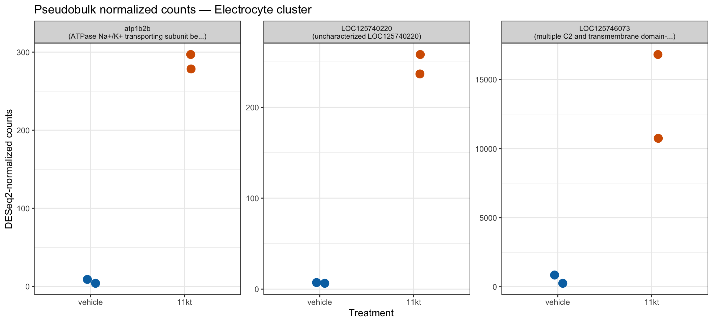
NoteThe visualization uses DESeq2 size-factor-normalized counts
The plots above show counts(dds, normalized = TRUE) — the raw counts divided by DESeq2’s internally estimated size factors, which correct for differences in total library size between pseudobulk samples. This is the natural scale for displaying pseudobulk results alongside DESeq2 output.
These are not the same as: - SCT Pearson residuals (used for clustering) - Log-normalized counts from NormalizeData - Harmony-corrected embeddings
All of those are inappropriate inputs to DESeq2. Here, they are also inappropriate for visualization because they do not represent the same count scale that DESeq2 used for testing.
ImportantFind DE genes in another cell type
Using the de_results list and the dds_objects list, repeat the pseudobulk visualization for a different cell type in sample_counts_per_ct.
# Replace "Schwann" with any cell type from sample_counts_per_ct
ct_alt <- "Schwann"
dds_alt <- dds_objects[[ct_alt]]
dds_alt <- estimateSizeFactors(dds_alt)
norm_alt <- counts(dds_alt, normalized = TRUE)
top_genes_alt <- de_results[[ct_alt]] |>
filter(!is.na(padj)) |>
slice_min(padj, n = 3) |>
pull(gene)- Do the same genes appear in the top hits for both cell types?
- For genes that appear in multiple cell types, is the direction of change (up or down in 11-KT) consistent? What would consistent direction across cell types suggest biologically?
TipSolution
Genes involved in systemic hormonal responses — such as lipid metabolism enzymes (e.g., elovl7a), extracellular matrix components (collagens, cadherins), or stress response genes — may appear in the top hits for multiple cell types. A consistent direction across cell types suggests a broad organismal response to 11-KT.
By contrast, electrocyte-specific genes such as potassium channel subunits (kcna, kcnc family) and sodium channel auxiliaries (scn4b) are unlikely to appear in Schwann or Fibroblast clusters, because those cell types do not express the electrocyte action potential machinery.
If a gene appears with opposite directions in two cell types, treat that result with caution: it may reflect a real cell-type-specific response, or it may be a statistical artifact driven by one unusually high or low sample in one of the clusters. With n=2, always check whether both replicates within each condition agree before interpreting the result.
Differential cell-type abundance
Beyond which genes change expression, we can ask whether the proportions of cell types shift between conditions. For example, if 11-KT promotes differentiation of muscle satellite cells into electrocyte precursors, we might expect the Muscle cluster to shrink and the Electrocyte cluster to grow.
# Per-sample cell counts and proportions by cell type
prop_table <- merged_seurat@meta.data |>
group_by(orig.ident, cell_type_go, treatment, sample) |>
summarise(n_cells = n(), .groups = "drop") |>
group_by(orig.ident) |>
mutate(
total = sum(n_cells),
prop = n_cells / total
) |>
ungroup()
# Show the full table
prop_table |>
dplyr::select(sample, treatment, cell_type_go, n_cells, total, prop) |>
arrange(treatment, cell_type_go) |>
knitr::kable(
digits = 3,
caption = "Cell-type proportions per sample"
)| sample | treatment | cell_type_go | n_cells | total | prop |
|---|---|---|---|---|---|
| BB48 | 11kt | Electrocyte | 172 | 555 | 0.310 |
| BB49INJ | 11kt | Electrocyte | 311 | 958 | 0.325 |
| BB48 | 11kt | Endothelial | 9 | 555 | 0.016 |
| BB49INJ | 11kt | Endothelial | 65 | 958 | 0.068 |
| BB48 | 11kt | Motorneuron | 196 | 555 | 0.353 |
| BB49INJ | 11kt | Motorneuron | 188 | 958 | 0.196 |
| BB48 | 11kt | Muscle | 91 | 555 | 0.164 |
| BB49INJ | 11kt | Muscle | 130 | 958 | 0.136 |
| BB48 | 11kt | Schwann | 87 | 555 | 0.157 |
| BB49INJ | 11kt | Schwann | 264 | 958 | 0.276 |
| BB50 | vehicle | Electrocyte | 322 | 861 | 0.374 |
| BB50INJ | vehicle | Electrocyte | 174 | 514 | 0.339 |
| BB50 | vehicle | Endothelial | 36 | 861 | 0.042 |
| BB50INJ | vehicle | Endothelial | 36 | 514 | 0.070 |
| BB50 | vehicle | Motorneuron | 99 | 861 | 0.115 |
| BB50INJ | vehicle | Motorneuron | 61 | 514 | 0.119 |
| BB50 | vehicle | Muscle | 196 | 861 | 0.228 |
| BB50INJ | vehicle | Muscle | 110 | 514 | 0.214 |
| BB50 | vehicle | Schwann | 208 | 861 | 0.242 |
| BB50INJ | vehicle | Schwann | 133 | 514 | 0.259 |
ggplot(
prop_table,
aes(x = sample, y = prop, fill = cell_type_go)
) +
geom_col() +
facet_wrap(~treatment, scales = "free_x") +
theme_bw() +
theme(axis.text.x = element_text(angle = 45, hjust = 1)) +
labs(
title = "Cell-type proportions per sample (faceted by treatment)",
y = "Proportion",
x = "Sample",
fill = "Cell type"
)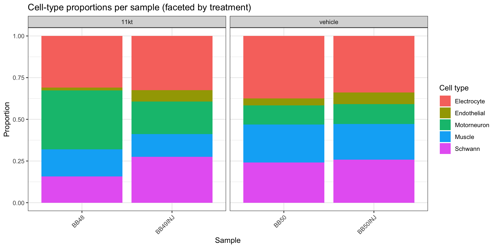
ggplot(
prop_table,
aes(x = cell_type_go, y = prop, color = treatment, shape = sample)
) +
geom_point(
size = 3.5,
position = position_dodge(width = 0.5)
) +
scale_color_manual(values = c("11kt" = "#D55E00", "vehicle" = "#0072B2")) +
theme_bw() +
theme(axis.text.x = element_text(angle = 45, hjust = 1)) +
labs(
title = "Cell-type proportions — individual fish (n = 4)",
y = "Proportion of all nuclei",
x = "Cell type"
)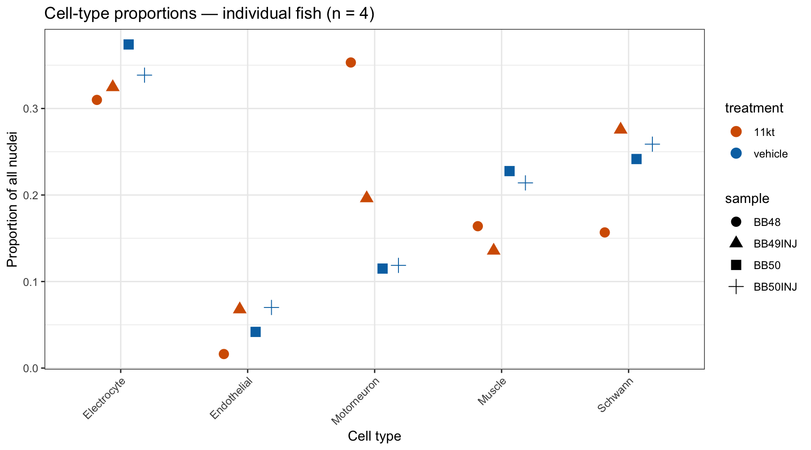
NoteStatistical testing for abundance with n=2: extreme caution required
With 2 replicates per condition, formal statistical tests for differential abundance are severely underpowered. We include a test here because it is part of a complete analysis pipeline, but:
- Report direction and magnitude, not the p-value alone.
- Check whether both replicates agree: if BB48 is higher than BB50, is BB49INJ also higher than BB50INJ? A result where the two 11-KT fish disagree with each other as much as they disagree with the vehicle fish is uninformative.
- Always show the individual points (as in the scatter plot above), not means ± SE — the n is too small for a summary to be meaningful.
if (requireNamespace("speckle", quietly = TRUE)) {
# --- propeller path (speckle package) ---
message("Running propeller (speckle package)")
prop_results <- speckle::propeller(
clusters = merged_seurat$cell_type_go,
sample = merged_seurat$orig.ident,
group = merged_seurat$treatment
)
print(prop_results)
} else {
# --- fallback: arcsine-square-root transformation + limma ---
# This is the same transformation propeller uses internally.
message("speckle not available; using arcsine-limma fallback")
prop_wide <- prop_table |>
mutate(asin_prop = asin(sqrt(prop))) |>
dplyr::select(orig.ident, treatment, cell_type_go, asin_prop) |>
pivot_wider(
id_cols = c(orig.ident, treatment),
names_from = cell_type_go,
values_from = asin_prop,
values_fill = 0
) |>
arrange(treatment) # vehicle rows first for consistent contrast direction
design <- model.matrix(~treatment, data = prop_wide)
# limma on cell types (columns); omit the two metadata columns
ct_cols <- setdiff(names(prop_wide), c("orig.ident", "treatment"))
fit <- limma::lmFit(t(prop_wide[, ct_cols]), design)
fit <- limma::eBayes(fit)
da_res <- limma::topTable(fit, coef = 2, n = Inf)
cat("Differential abundance results (arcsine-limma, 11kt vs vehicle):\n")
print(da_res)
} BaselineProp.clusters BaselineProp.Freq PropMean.11kt
Motorneuron Motorneuron 0.18836565 0.27469766
Muscle Muscle 0.18247922 0.14983167
Electrocyte Electrocyte 0.33898892 0.31727228
Endothelial Endothelial 0.05055402 0.04203295
Schwann Schwann 0.23961219 0.21616543
PropMean.vehicle PropRatio Tstatistic P.Value FDR
Motorneuron 0.11682981 2.3512634 3.0001129 0.04050377 0.1852658
Muscle 0.22082503 0.6785085 -2.4119824 0.07410630 0.1852658
Electrocyte 0.35625257 0.8905824 -0.9165130 0.41179107 0.5114918
Endothelial 0.05592538 0.7515899 -0.8445749 0.44639525 0.5114918
Schwann 0.25016721 0.8640838 -0.7204970 0.51149179 0.5114918
NoteHow propeller and arcsine-limma test abundance
Both approaches apply an arcsine-square-root transformation to the cell-type proportions before fitting a linear model. The transformation stabilizes variance — proportions near 0 or 1 have very different absolute variability from those near 0.5, and the arcsine transformation equalizes this.
propeller (from the speckle package) wraps this workflow with additional options for handling replicates and zero-count cell types.
arcsine-limma applies the same transformation and calls limma::lmFit directly — identical in principle, slightly less convenient.
With n=2 per group the denominator degrees of freedom for the linear model are very low (df = 2 for a two-sample comparison with 4 total libraries). Only very large proportion differences are detectable. Report FDR-adjusted p-values alongside the raw proportion differences shown in the scatter plot.
Validation: recovering known 11-KT biology
Our pseudobulk analysis is more trustworthy if it quantitatively recovers gene-expression changes previously observed by independent methods. Losilla & Gallant (2025) applied bulk RNA-seq to the electric organ of B. brachyistius under androgen treatment (17α-methyltestosterone, 17αMT) and identified 244 differentially expressed genes (|logFC| > 2, FDR < 0.001). We now have that complete DEG table and can perform a systematic cross-study comparison.
Both studies used the same species and tissue (B. brachyistius electric organ), but differ in two important ways: the androgen used (17αMT vs 11-ketotestosterone) and the sequencing technology (bulk RNA-seq vs single-nucleus pseudobulk). The key prediction is that androgen-responsive genes should shift in the same direction in both datasets, and ideally the magnitude of those shifts should be correlated across studies. Direction concordance well above 50% — the random- chance baseline — and a positive logFC–logFC correlation are the two main indicators that our snRNA-seq pipeline preserved the underlying biology.
# Named gene vectors for scatter-plot labeling (Seurat rowname convention:
# lowercase symbols for annotated genes, LOC IDs for unannotated ones)
cytoskeletal <- c(
"actn1", "actc1c", "myh6", "acta1b", "xirp1", "myo1d",
"eml6", "tubb2", "cavin4b", "mid1ip1l"
)
ecm_genes <- c("thbs4b", "cdh11", "epdl2")
lipid_genes <- c("elovl7a", "selenoi", "fam126a")
kchan_genes <- c(
"LOC125742960", # scn4aa — Nav1.4a (no curated symbol in this genome build)
"LOC125743019", # kcna7a — Kv1.7a (no curated symbol in this genome build)
"kcna1", "kcna7", "kcnc1", "kcnc2", "kcng4a", "scn4b"
)
# Additional named genes from the Losilla 2025 top-hits list
label_genes <- c(
cytoskeletal, ecm_genes, lipid_genes, kchan_genes,
"fhl1a", "tmem26b", "alpk2", "atp1b2b"
)
# Load the full Losilla & Gallant 2025 bulk DEG table.
# All 244 rows are T8day vs control (sampleA = "T_8day", sampleB = "control").
# Positive logFC = upregulated after 8 days of androgen treatment.
losilla_bulk <- read_csv(
"data/ssrnaseq_data/EO/losilla_et_al_data.csv",
show_col_types = FALSE
) |>
dplyr::rename(
gene_bulk = "Gene Symbol",
desc_bulk = "Gene Description",
logFC_bulk = "logFC",
FDR_bulk = "FDR"
) |>
mutate(
direction_bulk = if_else(logFC_bulk > 0, "up (androgen)", "down (androgen)")
)
cat("Losilla & Gallant 2025 bulk DEGs (T8day vs control):", nrow(losilla_bulk), "\n")Losilla & Gallant 2025 bulk DEGs (T8day vs control): 245 cat(" Up in androgen: ", sum(losilla_bulk$logFC_bulk > 0), "\n") Up in androgen: 148 cat(" Down in androgen:", sum(losilla_bulk$logFC_bulk < 0), "\n") Down in androgen: 97 Now we join those bulk DEGs against every gene tested in the snRNA-seq pseudobulk — not just the significant ones. We want to see where each Losilla DEG lands in the snRNA-seq effect-size landscape: was it even detected? If so, in which direction?
# Select the target cell type (Electrocyte, or the first available)
ct_check <- if ("Electrocyte" %in% names(de_results)) {
"Electrocyte"
} else {
names(de_results)[1]
}
# Inner join: keep only genes present in BOTH the Losilla bulk DEG list
# AND the snRNA-seq pseudobulk results for this cell type.
overlap_tbl <- de_results[[ct_check]] |>
inner_join(losilla_bulk, by = c("gene" = "gene_bulk")) |>
mutate(
direction_snrna = if_else(log2FoldChange > 0, "up (11-KT)", "down (11-KT)"),
concordant = sign(log2FoldChange) == sign(logFC_bulk)
) |>
left_join(
gene_lookup |> dplyr::select(key, gene_name, product),
by = c("gene" = "key")
)
# Summary statistics
n_detected <- nrow(overlap_tbl)
n_concordant <- sum(overlap_tbl$concordant, na.rm = TRUE)
n_sig <- sum(!is.na(overlap_tbl$padj) & overlap_tbl$padj < 0.05)
cat(sprintf(
"Losilla DEGs detected in snRNA-seq pseudobulk (%s): %d / %d (%.0f%%)\n",
ct_check, n_detected, nrow(losilla_bulk),
100 * n_detected / nrow(losilla_bulk)
))Losilla DEGs detected in snRNA-seq pseudobulk (Electrocyte): 213 / 245 (87%)cat(sprintf(
"Of detected genes, direction concordant: %d / %d (%.0f%%)\n",
n_concordant, n_detected, 100 * n_concordant / n_detected
))Of detected genes, direction concordant: 187 / 213 (88%)cat(sprintf(
"Nominally significant (padj < 0.05) in pseudobulk: %d\n", n_sig
))Nominally significant (padj < 0.05) in pseudobulk: 41# Show the 15 most strongly regulated genes in the bulk data and
# how they look in the snRNA-seq pseudobulk
overlap_tbl |>
dplyr::select(
gene, gene_name, logFC_bulk, direction_bulk,
log2FoldChange, padj, concordant
) |>
slice_max(abs(logFC_bulk), n = 15) gene gene_name logFC_bulk direction_bulk log2FoldChange
1 LOC125707921 LOC125707921 7.754480 up (androgen) 6.773209
2 fhl1a fhl1a 7.549976 up (androgen) 5.469451
3 LOC125706433 LOC125706433 7.288081 up (androgen) 1.262552
4 elovl7a elovl7a 6.716834 up (androgen) 8.031471
5 LOC125715275 LOC125715275 6.598396 up (androgen) 3.004754
6 LOC125740220 LOC125740220 6.196513 up (androgen) 5.165411
7 si:ch73-167i17.6 si:ch73-167i17.6 5.951719 up (androgen) 3.796175
8 LOC125744399 LOC125744399 5.866970 up (androgen) 4.534530
9 si:ch73-345f18.3 si:ch73-345f18.3 5.761696 up (androgen) 1.262552
10 xirp1 xirp1 5.669587 up (androgen) 4.055768
11 LOC125710249 LOC125710249 5.338673 up (androgen) 1.262552
12 tmem26b tmem26b 5.234284 up (androgen) 4.471609
13 LOC125717941 LOC125717941 5.091156 up (androgen) 5.552329
14 thbs4b thbs4b 5.073243 up (androgen) 5.964025
15 LOC125708743 LOC125708743 -4.804930 down (androgen) -2.942099
padj concordant
1 9.963010e-03 TRUE
2 3.761655e-03 TRUE
3 NA TRUE
4 1.584936e-04 TRUE
5 NA TRUE
6 2.431865e-16 TRUE
7 NA TRUE
8 NA TRUE
9 NA TRUE
10 6.688289e-15 TRUE
11 NA TRUE
12 7.661350e-06 TRUE
13 NA TRUE
14 3.602101e-04 TRUE
15 NA TRUEThe detection rate (how many of the 244 Losilla DEGs appear in our pseudobulk output) reflects the shallower per-nucleus coverage of snRNA-seq: a gene must be expressed in enough nuclei to pass DESeq2’s low-count filter. The direction concordance among detected genes is the real biological readout.
For a more quantitative view, the scatter plot below shows bulk logFC (x-axis) vs snRNA-seq pseudobulk log2FC (y-axis) for every gene in the overlap. A cloud of points in the upper-right and lower-left quadrants — with a positive trend — indicates that both the direction and the magnitude of regulation are preserved across methods and androgens.
library(ggrepel)
p_scatter <- overlap_tbl |>
mutate(
label = if_else(gene %in% label_genes, gene, NA_character_)
) |>
ggplot(aes(x = logFC_bulk, y = log2FoldChange, color = concordant)) +
geom_point(size = 2.5, alpha = 0.8) +
geom_hline(yintercept = 0, linetype = "dashed", color = "grey50") +
geom_vline(xintercept = 0, linetype = "dashed", color = "grey50") +
ggrepel::geom_text_repel(
aes(label = label),
na.rm = TRUE,
size = 3,
max.overlaps = 20,
box.padding = 0.4
) +
scale_color_manual(
values = c(
"TRUE" = "#009E73",
"FALSE" = "#CC4678"
),
labels = c(
"TRUE" = "Concordant",
"FALSE" = "Discordant"
),
na.value = "grey60"
) +
labs(
x = "Bulk logFC — Losilla & Gallant 2025\n(T8day vs control, 17αMT treatment)",
y = "Pseudobulk log2FC — this snRNA-seq\n(11-KT vs vehicle)",
color = "Direction",
caption = sprintf(
"%d genes detected in pseudobulk; %d concordant in direction (%.0f%%)",
n_detected, n_concordant, 100 * n_concordant / n_detected
)
) +
theme_bw(base_size = 12)
p_scatter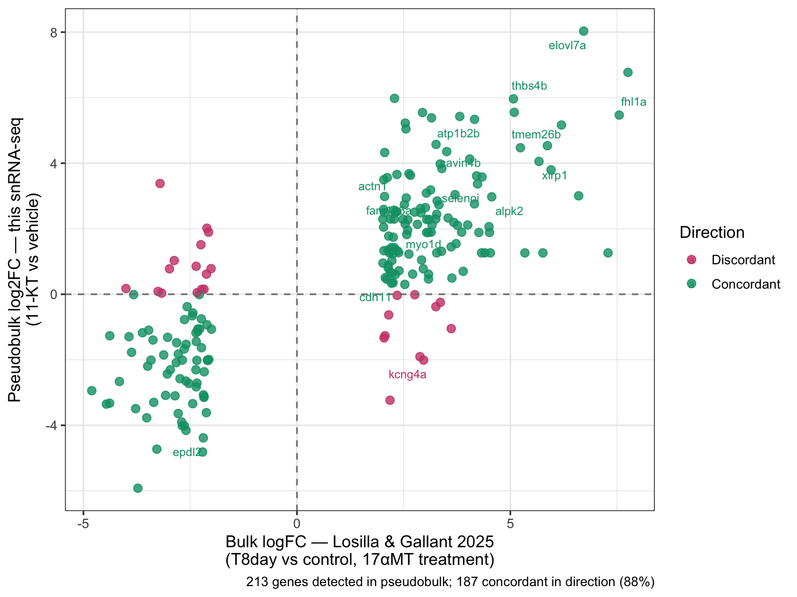
The top concordant genes — those significant in the pseudobulk and with consistent direction in both datasets — give us the strongest cross-study signal. The FeaturePlot and VlnPlot below visualize the two most concordant snRNA-seq hits on the Harmony UMAP and within electrocyte nuclei.
genes_to_show <- overlap_tbl |>
filter(concordant, !is.na(padj)) |>
arrange(padj) |>
pull(gene) |>
head(2)
# Fallback: use the top Losilla bulk hits if nothing concordant passes the filter
if (length(genes_to_show) < 2) {
genes_to_show <- head(losilla_bulk$gene_bulk[losilla_bulk$logFC_bulk > 0], 2)
}
# FeaturePlot split by treatment on the Harmony UMAP
p_feat_split <- FeaturePlot(
merged_seurat,
features = genes_to_show,
split.by = "treatment",
reduction = "umap.harmony",
ncol = 2
)
# VlnPlot within electrocyte nuclei only, grouped by treatment
p_vln <- VlnPlot(
subset(merged_seurat, cell_type_go == ct_check),
features = genes_to_show,
group.by = "treatment",
cols = c("vehicle" = "#0072B2", "11kt" = "#D55E00"),
pt.size = 0.5,
ncol = 2
)
p_feat_split / p_vln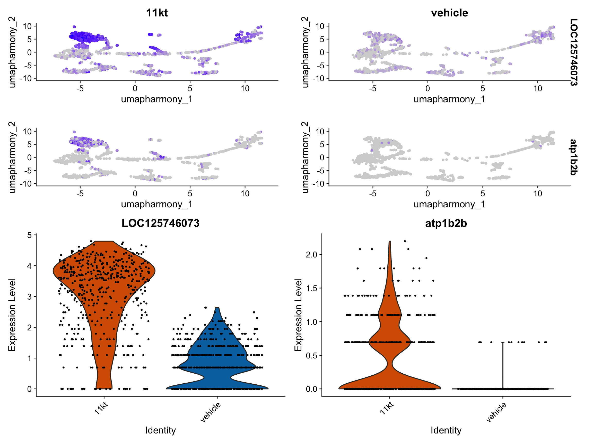
NoteVlnPlot shows single-nucleus distributions; pseudobulk tests biological replicates
The VlnPlot above shows expression across all individual nuclei, colored by treatment. It gives an intuitive sense of the distribution within each condition but is not a statistical test — nuclei are not independent biological replicates.
Use the VlnPlot to visualize; use the DESeq2 pseudobulk results to make statistical claims.
If a gene looks strikingly different in the VlnPlot but has a large padj in DESeq2, fish-to-fish variability is the most likely explanation: one fish drives the visual impression but the effect is not consistent across both replicates in each condition. That is important scientific information — it means the result is not yet reproducible and should not be reported as a treatment effect without further validation.
ImportantInterpreting the bulk vs single-nucleus cross-study comparison
The Losilla & Gallant 2025 paper (DOI: 10.1038/s41598-025-85637-w) reports bulk RNA-seq results from B. brachyistius electric organ under 17α-methyltestosterone (17αMT) treatment. Use the overlap_tbl table and the scatter plot above to answer the following questions.
Direction concordance. Look at the concordance rate printed by the
bulk-snrna-overlapchunk. Is it substantially above 50% (the random-chance baseline)? What does that tell you about whether the biological signal has been preserved through Harmony integration and pseudobulk aggregation?Effect-size correlation. Examine the scatter plot. Are genes with a large bulk logFC (far from zero on the x-axis) also showing larger fold changes in the snRNA-seq pseudobulk (far from zero on the y-axis)? If so, what does a positive logFC–logFC trend imply beyond just direction concordance?
Missing genes. Some Losilla DEGs are absent from
overlap_tblbecause they were not tested in the pseudobulk analysis. Give two technical reasons why a gene present in the bulk dataset might be missing from the snRNA-seq pseudobulk output, without implying any biological difference between 17αMT and 11-KT.Hormone comparison. Losilla & Gallant used 17αMT while this experiment used 11-ketotestosterone (11-KT). Both are androgens in teleost fish, but they are not identical. Would you predict the same genes responding, a subset, or an entirely different set? What two biological differences between the androgens could explain any discordance you observe?
TipSolution
Question 1: A concordance rate well above 50% — typically 70% or more is considered strong — indicates that the transcriptional direction of androgen response is preserved across the two independent datasets. Because the studies used different androgens, different animals, and different sequencing technologies, high directional agreement provides compelling evidence that Harmony integration did not distort the biological signal and that the pseudobulk aggregation reflects genuine treatment differences rather than batch artifacts.
Question 2: A positive trend in the scatter plot means that genes that responded strongly in the bulk experiment also tend to show larger effect sizes in the snRNA-seq pseudobulk. This is a stronger form of validation than direction alone: it suggests that the relative importance of genes in the androgen response is consistent across methods. Genes near the origin in both axes are responding weakly (or inconsistently) in both studies; genes in the concordant upper-right or lower-left quadrants are the most robust hits. You can quantify this further with cor(overlap_tbl$logFC_bulk, overlap_tbl$log2FoldChange, use = "complete.obs").
Question 3: Two technical explanations (before inferring biological differences):
- Low nuclear expression / low detection: snRNA-seq captures only nuclear RNA. Cytoplasmic transcripts — especially in highly differentiated cells like electrocytes — may be abundant in bulk data but largely absent from nuclear fractions, making them invisible to pseudobulk aggregation.
- Gene naming mismatch: the gene symbols in the Losilla 2025 GTF annotation may differ from those in the RefSeq GTF used here (e.g., a different NCBI LOC number for the same locus, a paralog-specific suffix, or a genome assembly update that renamed or split the gene model). A gene that fails to join on
gene == gene_bulkmay simply have a different identifier in each annotation.
Question 4: Most canonical androgen-responsive electric organ genes are expected to respond to both 17αMT and 11-KT, because both act through the androgen receptor. However, the specific gene set and effect magnitudes may differ for two reasons: (a) Receptor selectivity — 11-KT is the physiologically dominant teleost androgen and may recruit different co-regulators or bind with higher affinity to the mormyrid androgen receptor than the synthetic 17αMT does; (b) Aromatization — 17αMT cannot be converted to estrogens (non-aromatizable), whereas 11-KT’s aromatization potential differs; this could activate estrogen receptor–mediated pathways for some genes in the 17αMT study that are not activated by 11-KT, or vice versa.
TipKey Points
Harmony integration corrects GEM-well batch effects by adjusting the PCA embedding so cells are grouped by cell type rather than capture well. Use Harmony embeddings for clustering and visualization; never as input to differential expression testing.
Pseudoreplication is a critical statistical error in single-nucleus DE: nuclei from the same animal are not independent replicates.
AggregateExpressioncollapses nuclei to the biological replicate level before testing.DESeq2 requires raw RNA counts (
assay = "RNA"inAggregateExpression). SCT residuals, log-normalized values, and Harmony-corrected embeddings violate the negative binomial count model and must not be used as DE input.With n=2 per group, DESeq2 will produce wide confidence intervals and high adjusted p-values. This is correct statistical behavior. Report log2FoldChange and direction; a result where both replicates within each condition agree in direction is more credible than a low padj achieved by one unusual fish.
AggregateExpression(group.by = c("cell_type_go", "orig.ident"))builds the pseudobulk matrix. Parse the column names (format:CellType_Sample) to reconstruct the sample-level metadata data frame required byDESeqDataSetFromMatrix.Differential abundance testing with propeller or arcsine-limma quantifies shifts in cell-type proportions between conditions. With n=2, always show individual fish values rather than group means, and interpret direction and magnitude rather than p-values alone.
Recovering known hormone-responsive gene families (Losilla & Gallant 2025) in the pseudobulk results — and showing fold-change correlation across studies and methods — confirms that Harmony integration and pseudobulk aggregation preserved the biological signal of interest. Direction concordance well above 50% and a positive logFC–logFC correlation are the two key quantitative indicators of cross-study reproducibility.